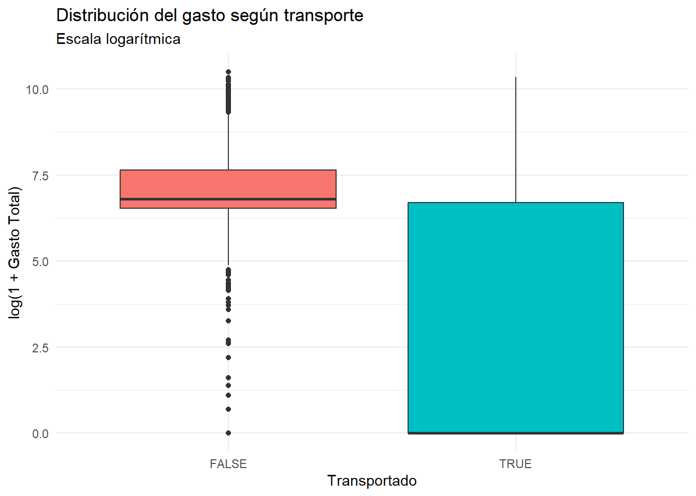
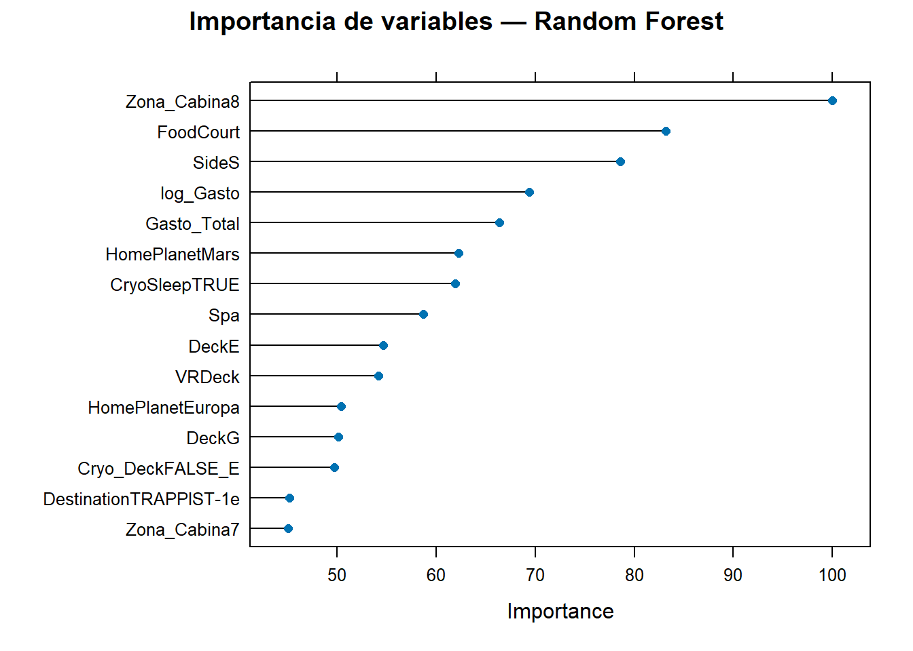
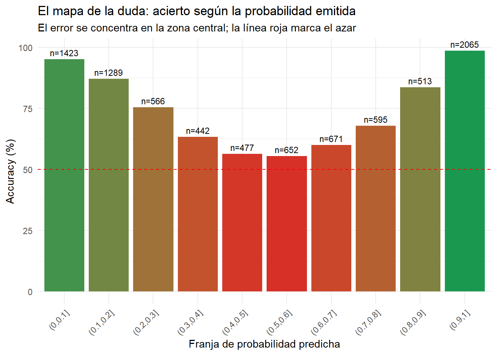
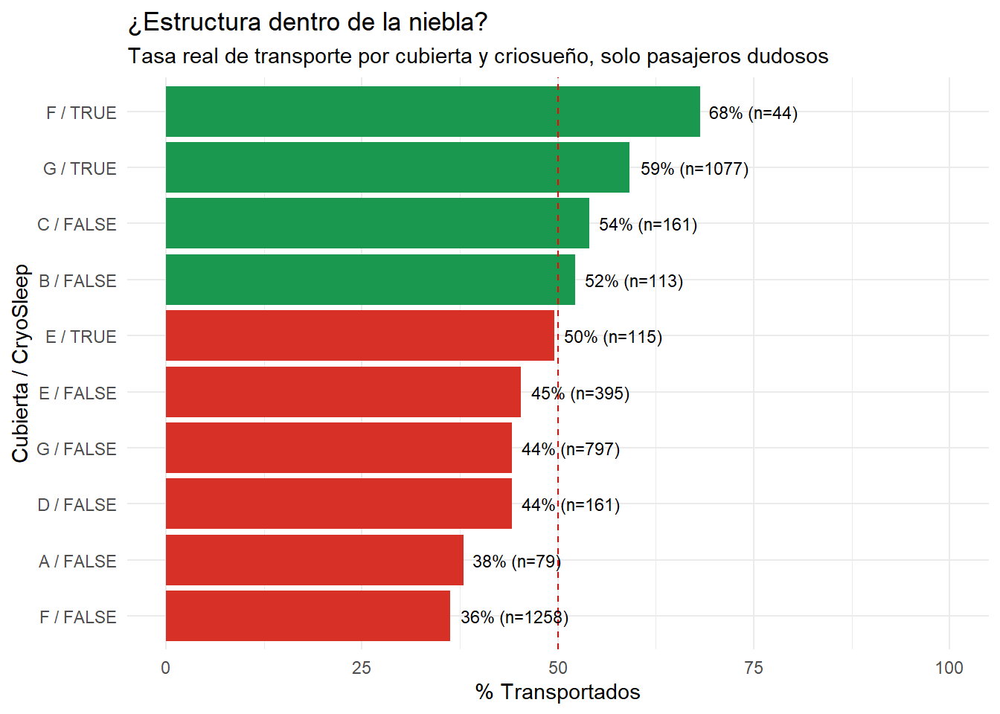
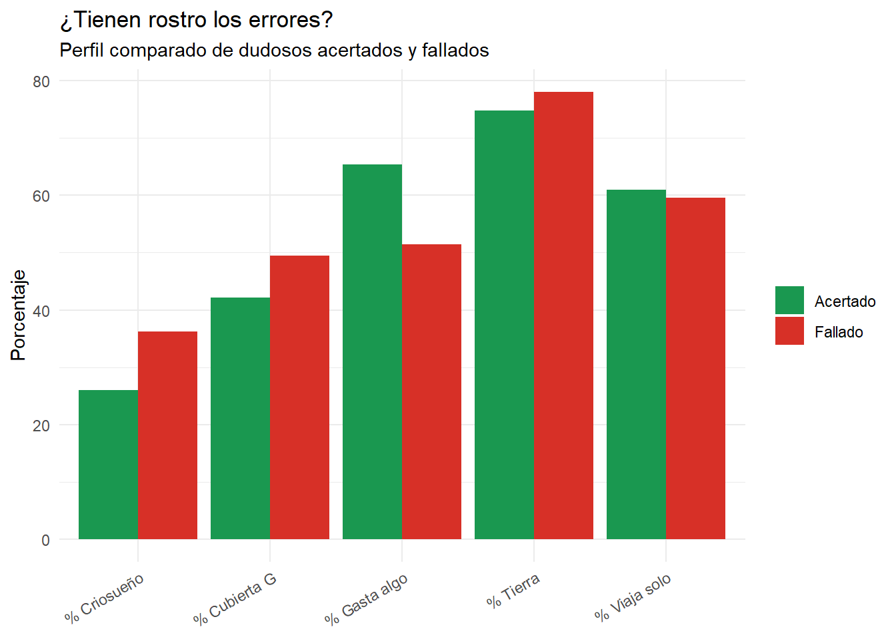

library(readr)
library(tidyverse)
library(xgboost)
train <- read_csv("train.csv")
test <- read_csv("test.csv")
train <- train %>%
separate(PassengerId, into = c("Grupo", "Num_Grupo"), sep = "_", remove = FALSE) %>%
separate(Cabin, into = c("Deck", "Cabin_Num", "Side"), sep = "/", remove = TRUE)Spaceship Titanic
1. INTRODUCCIÓN
El presente trabajo aborda la resolución y el análisis predictivo del problema planteado en la competición de Kaggle: Spaceship Titanic. Esta competición propone una adaptación futurista y ficticia del clásico dilema del RMS Titanic, traspolando el escenario a un contexto de transporte intergaláctico.
En este escenario, el crucero espacial Spaceship Titanic sufre una colisión con una anomalía espaciotemporal mientras transporta a miles de emigrantes hacia nuevos planetas habitables. Como consecuencia del incidente, aproximadamente la mitad de los pasajeros a bordo son transportados a una dimensión paralela. El objetivo principal del proyecto es construir y evaluar un modelo de aprendizaje automático (Machine Learning) capaz de predecir qué pasajeros fueron transportados (Transported), optimizando la precisión de la clasificación para facilitar y coordinar los esfuerzos de rescate.
1.1. Objetivos del trabajo
Para dar respuesta al problema planteado, el proyecto se estructura en torno a los siguientes objetivos específicos:
Auditoría y análisis exploratorio de datos (EDA): identificar la estructura subyacente del dataset, la distribución de las variables financieras y demográficas, y la presencia de datos faltantes (missing values).
Imputación guiada por reglas de negocio: diseñar una estrategia de limpieza de datos rigurosa que priorice la deducción lógica (a partir de grupos familiares, cubiertas y edades) antes de aplicar técnicas estadísticas, evitando la introducción de ruido artificial.
Segmentación socioeconómica: explotar la relación entre el origen de los pasajeros (HomePlanet), su ubicación en la nave (Deck) y su nivel de gasto a bordo para imputar valores faltantes en el bloque financiero mediante métricas robustas.
Ingeniería de características (feature engineering): extraer información de alto valor predictivo a partir de variables compuestas como el identificador de pasajero (PassengerId), el camarote (Cabin) o el consumo total realizado.
Modelado predictivo y evaluación: entrenar y comparar algoritmos de clasificación supervisada para maximizar la métrica de evaluación (accuracy) requerida por la competición.
Revisión crítica del protocolo de medición: verificar que las diferencias sobre las que se toman decisiones superan el ruido de la propia estimación, y corregir el procedimiento cuando no sea así.
2. ANÁLISIS EXPLORATORIO
El primer paso para familiarizarse con el conjunto de datos consiste en un análisis exploratorio inicial, cuyo propósito es doble: por un lado, conocer la estructura del dataset y la distribución de sus variables; por otro, localizar los valores ausentes y valorar su alcance antes de decidir cómo tratarlos.
Los datos proceden directamente del repositorio de la competición en Kaggle, que distribuye tres ficheros. El primero, train.csv, contiene los registros etiquetados y es el que se utiliza para entrenar el modelo. El segundo, test.csv, reúne los pasajeros sobre los que hay que emitir una predicción y, lógicamente, no incluye la variable objetivo. El tercero, sample_submission.csv, define el formato exacto en el que deben enviarse los resultados a la plataforma para su evaluación.
El conjunto de entrenamiento está formado por 8.693 observaciones y 14 variables, donde cada fila corresponde a un pasajero del Spaceship Titanic.
2.1 Desglose de variables
| Variable | Tipo | Descripción |
|---|---|---|
PassengerId |
Texto | Identificador único con formato gggg_pp, donde gggg es el grupo con el que viaja el pasajero y pp su número dentro de ese grupo. Los miembros de un mismo grupo suelen ser familia, aunque no siempre. |
HomePlanet |
Categórica | Planeta de origen del pasajero: Earth, Europa o Mars. |
CryoSleep |
Booleana | Indica si el pasajero optó por pasar el trayecto en animación suspendida. Quienes viajan en criosueño permanecen confinados en su camarote. |
Cabin |
Texto | Camarote asignado, con formato deck/num/side. El lado puede ser P (Port, babor) o S (Starboard, estribor). |
Destination |
Categórica | Planeta al que se dirige el pasajero: TRAPPIST-1e, 55 Cancri e o PSO J318.5-22. |
Age |
Numérica | Edad del pasajero. |
VIP |
Booleana | Indica si contrató el servicio VIP durante el viaje. |
RoomService |
Numérica | Importe facturado en servicio de habitaciones. |
FoodCourt |
Numérica | Importe facturado en la zona de restauración. |
ShoppingMall |
Numérica | Importe facturado en la galería comercial. |
Spa |
Numérica | Importe facturado en el spa. |
VRDeck |
Numérica | Importe facturado en la cubierta de realidad virtual. |
Name |
Texto | Nombre y apellidos del pasajero. |
Transported |
Booleana | Variable objetivo. Indica si el pasajero fue trasladado a la dimensión paralela. Solo está presente en el conjunto de entrenamiento. |
La variable a predecir es Transported, de tipo booleano: toma el valor True cuando el pasajero fue desplazado a la dimensión paralela y False cuando permaneció en la nuestra. Es, por tanto, el objetivo de clasificación en torno al cual gira todo el modelo.
train %>%
count(Transported) %>%
mutate(porcentaje = n / sum(n) * 100)# A tibble: 2 × 3
Transported n porcentaje
<lgl> <int> <dbl>
1 FALSE 4315 49.6
2 TRUE 4378 50.4El resultado muestra un reparto prácticamente simétrico: un 49,6 % de los pasajeros no fue transportado frente a un 50,3 % que sí. Este equilibrio tiene dos implicaciones prácticas.
La primera es que no existe problema de clases desbalanceadas, de modo que el accuracy funciona aquí como métrica fiable, cosa que no ocurriría si una de las clases fuera minoritaria, y no es necesario recurrir a técnicas de remuestreo ni a ponderaciones.
La segunda es que fija una referencia clara contra la que medirse: un clasificador que decidiera al azar, o que asignara siempre la clase mayoritaria, acertaría en torno al 50 % de los casos. Ese es el umbral mínimo que cualquier modelo debe superar con holgura para aportar valor real.
2.2 Hipótesis iniciales
Antes de manipular los datos conviene explicitar qué esperamos encontrar en ellos. Las siguientes hipótesis, formuladas a partir de la lógica del enunciado y de una primera inspección del dataset, guiarán tanto la estrategia de imputación como la interpretación posterior de los resultados.
H1 — Inactividad durante el criosueño. Un pasajero en animación suspendida permanece confinado en su camarote y no puede acceder a ninguna instalación de la nave. Por tanto, todo registro con CryoSleep == TRUE debería presentar un gasto nulo en las cinco categorías de consumo. Se trata de una relación determinista, no estadística: si se cumple, permite rellenar huecos con certeza absoluta.
H2 — Cohesión de los grupos de viaje. Los pasajeros que comparten identificador de grupo (el prefijo gggg de PassengerId) viajan juntos, normalmente como unidad familiar. Cabe esperar entonces que compartan también atributos demográficos y de ubicación: el planeta de origen, el destino, la cubierta y el lado de la nave. De confirmarse, el grupo se convierte en la unidad natural para deducir valores ausentes.
H3 — Estratificación socioeconómica por ubicación. La cubierta asignada y el planeta de procedencia no son independientes del poder adquisitivo del pasajero. Esperamos encontrar una jerarquía reconocible que permita imputar el bloque financiero mediante estadísticos robustos calculados por segmento.
H4 — Gasto restringido por edad. Los pasajeros menores carecen de capacidad financiera propia y de acceso autónomo a los servicios de pago de la nave. Su consumo registrado debería ser, en consecuencia, nulo o prácticamente inexistente. El umbral exacto de edad lo determinaremos empíricamente.
H5 — El criosueño como factor de transporte. Estar encerrado en una cápsula de animación suspendida en el momento de la colisión implica una ausencia total de movilidad y de capacidad de reacción. Presumimos que esta circunstancia altera de forma significativa la probabilidad de acabar en la dimensión paralela, lo que convertiría a CryoSleep en una de las variables con mayor poder predictivo del conjunto.
H6 — El VIP como marcador de gasto elevado. Cabe esperar que los pasajeros con VIP == TRUE presenten consumos sustancialmente superiores a la media y se concentren en determinadas cubiertas y planetas de origen. Es una hipótesis útil porque, si se confirma, refuerza la segmentación socioeconómica de H3; y si no se confirma, es señal de que la variable aporta poca información y quizá convenga descartarla.
H7 — Estructura informativa del camarote. El número de camarote no sería un identificador aleatorio, sino que reflejaría la posición física a lo largo de la nave. Agrupado en tramos, podría capturar proximidad entre pasajeros y relacionarse con la probabilidad de ser transportado, algo plausible si la anomalía afectó a zonas concretas del casco.
H8 — Los valores ausentes no son aleatorios. Es decir, que la falta de datos sigue algún patrón en lugar de distribuirse de forma uniforme. Merece la pena comprobarlo porque condiciona toda la estrategia de imputación: si el mecanismo es MCAR se puede imputar con tranquilidad, y si no lo es, la propia ausencia del dato es información aprovechable.
2.3 Auditoría de datos faltantes
Con la estructura del dataset ya descrita, el siguiente paso es cuantificar hasta qué punto está incompleto. La estrategia de imputación que se adopte más adelante depende directamente de qué reglas resulten verificables: si H1 y H2 se confirman, buena parte de los huecos podrá rellenarse por deducción lógica, sin recurrir a estimaciones estadísticas.
| Variable | Total NAs | % sobre el total |
|---|---|---|
| CryoSleep | 217 | 2.50 |
| ShoppingMall | 208 | 2.39 |
| VIP | 203 | 2.34 |
| HomePlanet | 201 | 2.31 |
| Name | 200 | 2.30 |
| Deck | 199 | 2.29 |
| Cabin_Num | 199 | 2.29 |
| Side | 199 | 2.29 |
| VRDeck | 188 | 2.16 |
| FoodCourt | 183 | 2.11 |
| Spa | 183 | 2.11 |
| Destination | 182 | 2.09 |
| RoomService | 181 | 2.08 |
| Age | 179 | 2.06 |
| PassengerId | 0 | 0.00 |
| Grupo | 0 | 0.00 |
| Num_Grupo | 0 | 0.00 |
| Transported | 0 | 0.00 |
La auditoría arroja un total de 2.324 celdas vacías repartidas entre doce de las catorce variables del conjunto de entrenamiento. Lo primero que llama la atención es la uniformidad del reparto: todas las variables afectadas se mueven en una franja estrechísima, entre el 2,06 % de Age y el 2,50 % de CryoSleep. No hay ninguna columna especialmente degradada ni ninguna que se salve del problema.
Las dos únicas excepciones son PassengerId y Transported, ambas completas al 100 %. Tiene sentido: la primera es la clave identificativa de cada registro y la segunda es la variable objetivo, de modo que su integridad está garantizada por construcción. Este dato es importante porque significa que no se pierde ninguna observación etiquetada.
Que la incidencia sea tan pareja, en torno al 2,2 % de media, y que no discrimine entre bloques de variables apunta a un mecanismo de pérdida aleatorio, probablemente introducido de forma deliberada al construir la competición, más que a un sesgo sistemático de recogida. Es una primera señal a favor de un escenario MCAR, aunque conviene no darlo por cerrado: H8 planteaba precisamente que la ausencia podría concentrarse en determinados grupos o cubiertas, y eso solo se resuelve cruzando los nulos con esas variables, no mirando los totales columna a columna.
Hay una última consideración. Aunque ninguna variable supera el 2,5 %, los huecos están dispersos: al estar repartidos entre doce columnas distintas, es previsible que la proporción de filas con al menos un valor ausente sea muy superior, del orden del 20-25 %. Conviene verificarlo, porque descarta de entrada la opción más simple, que sería eliminar los registros incompletos.
resumen_casos <- tibble(
Muestra_Original = nrow(train),
Casos_Completos = nrow(drop_na(train)),
Filas_Perdidas = nrow(train) - nrow(drop_na(train)),
Pct_Retenido = round(nrow(drop_na(train)) / nrow(train) * 100, 2),
Celdas_NA_Total = sum(is.na(train))
)
resumen_casos# A tibble: 1 × 5
Muestra_Original Casos_Completos Filas_Perdidas Pct_Retenido Celdas_NA_Total
<int> <int> <int> <dbl> <int>
1 8693 6606 2087 76.0 2722La comprobación confirma lo anticipado: eliminar todas las filas con algún valor ausente supondría descartar en torno al 24 % del conjunto de entrenamiento, casi uno de cada cuatro pasajeros. La cifra ilustra el efecto acumulativo de la dispersión: ninguna variable por separado presenta un problema serio, pero al estar los huecos repartidos entre doce columnas distintas, basta con que a un registro le falte un único dato para que el borrado por listas lo elimine por completo.
Renunciar a ese volumen de información no es asumible, y menos aún cuando descartar registros incompletos solo resulta inocuo si la pérdida es estrictamente aleatoria, algo que H8 todavía no ha verificado. Queda descartado, por tanto, el borrado por listas: la alternativa es imputar, recuperando primero por deducción lógica todo lo que las reglas del problema permitan y recurriendo a estimaciones estadísticas solo para lo que no pueda resolverse de otro modo.
2.4 Validación de las hipótesis e imputación deductiva
Con el fin de mantener una metodología ordenada, agrupamos las hipótesis en dos bloques según la función que cumplen: las orientadas a resolver los valores ausentes mediante imputación lógica, y las destinadas a guiar el modelado predictivo.
A. Hipótesis orientadas a la imputación y la calidad de los datos
H1. Inactividad durante el criosueño. Todo registro con CryoSleep == TRUE debería presentar un gasto nulo en las cinco categorías de consumo. Es una relación determinista que permite rellenar los huecos financieros con certeza absoluta.
H2. Cohesión de los grupos de viaje. Los pasajeros que comparten identificador de grupo viajan juntos, normalmente como unidad familiar, y cabe esperar que compartan los atributos de origen y ubicación.
H3. Estratificación socioeconómica por ubicación. La cubierta asignada y el planeta de procedencia reflejan el poder adquisitivo del pasajero, lo que permitiría imputar el bloque financiero por segmentos.
H4. Gasto restringido por edad. Los pasajeros por debajo de cierta edad carecen de capacidad financiera propia, de modo que su consumo debería ser nulo.
H8. Estructura no aleatoria de los valores ausentes. De confirmarse, la propia ausencia del dato sería información aprovechable.
B. Hipótesis orientadas a la capacidad predictiva
H5. El criosueño como factor determinante del transporte. La inmovilidad durante la anomalía convertiría a CryoSleep en la variable de mayor poder predictivo.
H6. El estatus VIP como marcador socioeconómico. Los pasajeros VIP presentarían consumos superiores y se concentrarían en cubiertas y planetas concretos.
H7. Estructura espacial del camarote. La posición física del pasajero revelaría si la anomalía afectó a zonas específicas del casco.
C. Validación
Iniciamos la validación con las hipótesis orientadas a la imputación. La primera es que todos los pasajeros en criosueño tienen un gasto igual a cero, ya que su situación no les permite acceder a ninguna instalación.
De ser cierto, todas las observaciones con criosueño y algún gasto ausente podríamos rellenarlas con cero, e igualmente los pasajeros con gastos positivos y criosueño ausente podríamos rellenarlos con FALSE con total seguridad.
train %>%
filter(CryoSleep == TRUE) %>%
summarise(
Total_Criosueno = n(),
Suma_Total_Gastos = sum(RoomService + FoodCourt + ShoppingMall + Spa + VRDeck, na.rm = TRUE),
Con_Gasto_Mayor_0 = sum((RoomService + FoodCourt + ShoppingMall + Spa + VRDeck) > 0, na.rm = TRUE)
)# A tibble: 1 × 3
Total_Criosueno Suma_Total_Gastos Con_Gasto_Mayor_0
<int> <dbl> <int>
1 3037 0 0La hipótesis se confirma sin excepciones: ningún pasajero en estado de criosueño registra gasto alguno. La relación entre CryoSleep y el bloque financiero es, por tanto, determinista, y podemos emplearla con total garantía.
train <- train %>%
mutate(
Gasto_Total = coalesce(RoomService, 0) + coalesce(FoodCourt, 0) +
coalesce(ShoppingMall, 0) + coalesce(Spa, 0) + coalesce(VRDeck, 0),
CryoSleep = if_else(is.na(CryoSleep) & Gasto_Total > 0, FALSE, CryoSleep),
RoomService = if_else(CryoSleep == TRUE & is.na(RoomService), 0, RoomService),
FoodCourt = if_else(CryoSleep == TRUE & is.na(FoodCourt), 0, FoodCourt),
ShoppingMall = if_else(CryoSleep == TRUE & is.na(ShoppingMall), 0, ShoppingMall),
Spa = if_else(CryoSleep == TRUE & is.na(Spa), 0, Spa),
VRDeck = if_else(CryoSleep == TRUE & is.na(VRDeck), 0, VRDeck)
)
sum(is.na(train))[1] 2242La siguiente hipótesis es la de cohesión de los grupos de viaje: la idea de que los pasajeros con un mismo identificador de grupo se desplazan juntos y comparten por ello atributos comunes de origen y ubicación. De verificarse, el grupo se convertiría en una referencia fiable para deducir esos valores cuando falten.
coincidencia_side <- train %>%
filter(!is.na(Side)) %>%
group_by(Grupo) %>%
filter(n() > 1) %>%
summarise(distintos = n_distinct(Side)) %>%
summarise(total_grupos = n(),
mismo_side = sum(distintos == 1),
pct = round(mismo_side / total_grupos * 100, 2))
coincidencia_deck <- train %>%
filter(!is.na(Deck)) %>%
group_by(Grupo) %>%
filter(n() > 1) %>%
summarise(distintos = n_distinct(Deck)) %>%
summarise(total_grupos = n(),
mismo_deck = sum(distintos == 1),
pct = round(mismo_deck / total_grupos * 100, 2))
coincidencia_side# A tibble: 1 × 3
total_grupos mismo_side pct
<int> <int> <dbl>
1 1365 1365 100coincidencia_deck# A tibble: 1 × 3
total_grupos mismo_deck pct
<int> <int> <dbl>
1 1365 944 69.2El análisis de los 1.365 grupos formados por más de un pasajero arroja un resultado contundente: en la totalidad de ellos, todos los miembros se alojan exactamente en el mismo lado de la nave. No hay una sola excepción. Esta cohesión perfecta convierte a Side en una regla de imputación deductiva de fiabilidad absoluta.
La cubierta, en cambio, se comporta de otro modo: cerca de un 30,8 % de los grupos viajan repartidos en cubiertas distintas. Esta dispersión impide imputar la cubierta por mero parentesco, ya que introduciría un sesgo cercano al 31 % en la ubicación real del camarote.
El siguiente paso es comprobar si esa misma cohesión se extiende al planeta de origen y al de destino.
coincidencia_origen <- train %>%
filter(!is.na(HomePlanet)) %>%
group_by(Grupo) %>%
filter(n() > 1) %>%
summarise(distintos = n_distinct(HomePlanet)) %>%
summarise(total_grupos = n(),
mismo_origen = sum(distintos == 1),
pct = round(mismo_origen / total_grupos * 100, 2))
coincidencia_destino <- train %>%
filter(!is.na(Destination)) %>%
group_by(Grupo) %>%
filter(n() > 1) %>%
summarise(distintos = n_distinct(Destination)) %>%
summarise(total_grupos = n(),
mismo_destino = sum(distintos == 1),
pct = round(mismo_destino / total_grupos * 100, 2))
coincidencia_origen# A tibble: 1 × 3
total_grupos mismo_origen pct
<int> <int> <dbl>
1 1370 1370 100coincidencia_destino# A tibble: 1 × 3
total_grupos mismo_destino pct
<int> <int> <dbl>
1 1370 653 47.7La cohesión entre el grupo y el planeta de origen vuelve a ser del 100 %: todos los miembros de cada grupo comparten el mismo HomePlanet, sin excepción. Podemos, por tanto, emplearlo como regla de imputación con la misma seguridad absoluta que Side.
El destino se comporta de forma muy distinta. Frente a la coincidencia perfecta que muestran el origen y el lado de la nave, la cohesión del grupo respecto a Destination no llega siquiera al 50 %. Es habitual que pasajeros de un mismo grupo se dirijan a planetas diferentes, algo que tiene sentido si pensamos que un grupo de viaje puede compartir procedencia sin compartir destino final. Esta variable queda descartada como regla de imputación deductiva.
train <- train %>%
group_by(Grupo) %>%
mutate(
Side = if_else(is.na(Side) & any(!is.na(Side)), first(na.omit(Side)), Side),
HomePlanet = if_else(is.na(HomePlanet) & any(!is.na(HomePlanet)),
first(na.omit(HomePlanet)), HomePlanet)
) %>%
ungroup()
sum(is.na(train))[1] 2052La siguiente hipótesis tiene que ver con el gasto de los menores. Partimos de la premisa de que los pasajeros por debajo de cierta edad no realizan consumo alguno, al carecer de capacidad financiera propia. De confirmarse, dispondríamos de un nuevo criterio deductivo para completar el bloque financiero.
train %>%
filter(Age < 18) %>%
mutate(gasto = coalesce(RoomService, 0) + coalesce(FoodCourt, 0) +
coalesce(ShoppingMall, 0) + coalesce(Spa, 0) + coalesce(VRDeck, 0)) %>%
group_by(Age) %>%
summarise(Total = n(),
Con_Gasto = sum(gasto > 0),
Gasto_Maximo = max(gasto),
Gasto_Medio = round(mean(gasto), 2)) %>%
print(n = 20)# A tibble: 18 × 5
Age Total Con_Gasto Gasto_Maximo Gasto_Medio
<dbl> <int> <int> <dbl> <dbl>
1 0 178 0 0 0
2 1 67 0 0 0
3 2 75 0 0 0
4 3 75 0 0 0
5 4 71 0 0 0
6 5 33 0 0 0
7 6 40 0 0 0
8 7 52 0 0 0
9 8 46 0 0 0
10 9 42 0 0 0
11 10 39 0 0 0
12 11 47 0 0 0
13 12 41 0 0 0
14 13 141 74 12439 1115.
15 14 138 65 9190 663.
16 15 155 75 9597 772.
17 16 147 72 6279 708.
18 17 158 82 24217 910.El análisis arroja una conclusión nítida: el consumo aparece a partir de los 13 años, mientras que ningún pasajero menor de esa edad registra gasto alguno. Los 13 años funcionan así como un umbral limpio, lo que nos permite imputar con total seguridad un cero en cualquier gasto ausente de los pasajeros por debajo de esa edad. H4 queda confirmada, aunque con un umbral distinto del que habíamos supuesto de partida.
train <- train %>%
mutate(
RoomService = if_else(Age < 13 & is.na(RoomService), 0, RoomService),
FoodCourt = if_else(Age < 13 & is.na(FoodCourt), 0, FoodCourt),
ShoppingMall = if_else(Age < 13 & is.na(ShoppingMall), 0, ShoppingMall),
Spa = if_else(Age < 13 & is.na(Spa), 0, Spa),
VRDeck = if_else(Age < 13 & is.na(VRDeck), 0, VRDeck)
)
sum(is.na(train))[1] 2007Con las reglas deductivas aplicadas hasta aquí hemos reducido el número de valores ausentes a 2.007. Las siguientes hipótesis a comprobar son la segregación por origen y cubierta, y la restricción del estatus VIP por planeta.
train %>%
filter(!is.na(HomePlanet), !is.na(Deck)) %>%
count(HomePlanet, Deck) %>%
spread(key = Deck, value = n, fill = 0)# A tibble: 3 × 9
HomePlanet A B C D E F G T
<chr> <dbl> <dbl> <dbl> <dbl> <dbl> <dbl> <dbl> <dbl>
1 Earth 0 0 0 0 400 1620 2518 0
2 Europa 255 778 743 189 130 0 0 4
3 Mars 0 0 0 285 335 1130 0 0La tabla de contingencia entre planeta de origen y cubierta revela una estructura muy marcada, aunque asimétrica. Algunas cubiertas resultan perfectamente diagnósticas del origen: las cubiertas A, B, C y T alojan exclusivamente a pasajeros procedentes de Europa, y la cubierta G, a pasajeros de la Tierra. En estos casos la cubierta identifica el HomePlanet sin ambigüedad.
El resto de cubiertas no permite deducción alguna. Las cubiertas D, E y F son mixtas y por tanto no aportan información concluyente sobre el origen de quien las ocupa. La relación funciona solo en una dirección y solo para determinadas cubiertas: útil donde la correspondencia es unívoca, inservible donde hay mezcla.
train <- train %>%
mutate(
HomePlanet = case_when(
is.na(HomePlanet) & Deck %in% c("A", "B", "C", "T") ~ "Europa",
is.na(HomePlanet) & Deck == "G" ~ "Earth",
TRUE ~ HomePlanet
)
)
sum(is.na(train))[1] 1959train %>%
filter(!is.na(HomePlanet), !is.na(VIP)) %>%
count(HomePlanet, VIP) %>%
spread(key = VIP, value = n, fill = 0)# A tibble: 3 × 3
HomePlanet `FALSE` `TRUE`
<chr> <dbl> <dbl>
1 Earth 4559 0
2 Europa 1994 132
3 Mars 1680 64De esta tabla se desprende una pauta socioeconómica bastante clara. Ningún pasajero procedente de la Tierra figura en la categoría VIP, mientras que sí aparecen pasajeros VIP entre los originarios de Marte y de Europa. Esto sugiere una estratificación por planeta de origen: los viajeros de la Tierra presentarían el menor poder adquisitivo, por delante quedaría Marte, y en la posición más acomodada se situaría Europa.
Esta jerarquía resulta coherente con lo observado en la relación entre origen y cubierta, donde los pasajeros europeos ocupaban en exclusiva las cubiertas superiores y los terrícolas se concentraban en la cubierta G. Ambos indicios apuntan en la misma dirección.
train <- train %>%
mutate(VIP = if_else(HomePlanet == "Earth" & is.na(VIP), FALSE, VIP))
sum(is.na(train))[1] 1843La siguiente comprobación consiste en agrupar a los pasajeros por apellido, con el fin de averiguar si los miembros de una misma familia comparten planeta de origen y destino. La idea extiende la lógica de los grupos de viaje un paso más allá: mientras que el identificador de grupo capta a quienes viajan bajo una misma reserva, el apellido puede revelar vínculos familiares repartidos en reservas distintas.
train <- train %>% mutate(Apellido = word(Name, -1))
coincidencia_apellido <- train %>%
filter(!is.na(Apellido), !is.na(HomePlanet)) %>%
group_by(Apellido) %>%
filter(n() > 1) %>%
summarise(distintos = n_distinct(HomePlanet)) %>%
summarise(apellidos_repetidos = n(),
mismo_planeta = sum(distintos == 1),
pct = round(mismo_planeta / apellidos_repetidos * 100, 2))
coincidencia_destino_apellido <- train %>%
filter(!is.na(Apellido), !is.na(Destination)) %>%
group_by(Apellido) %>%
filter(n() > 1) %>%
summarise(distintos = n_distinct(Destination)) %>%
summarise(apellidos_repetidos = n(),
mismo_destino = sum(distintos == 1),
pct = round(mismo_destino / apellidos_repetidos * 100, 2))
coincidencia_apellido# A tibble: 1 × 3
apellidos_repetidos mismo_planeta pct
<int> <int> <dbl>
1 1827 1827 100coincidencia_destino_apellido# A tibble: 1 × 3
apellidos_repetidos mismo_destino pct
<int> <int> <dbl>
1 1819 604 33.2El resultado no deja lugar a dudas: de los 1.827 apellidos que aparecen repetidos, en la totalidad de ellos todos sus portadores comparten el mismo planeta de origen. Acabamos de identificar una nueva regla deductiva de plena fiabilidad, especialmente valiosa porque alcanza a pasajeros que viajan solos, sin grupo del que deducir el dato, pero que sí tienen parientes a bordo.
Con el destino, en cambio, el apellido pierde toda su capacidad predictiva: apenas en un 33,2 % de los casos coinciden todos sus miembros. La conclusión reproduce lo que ya habíamos visto con los grupos de viaje. Destination no guarda relación estable con ninguna de las variables estructurales del dataset, lo que sugiere que sus valores podrían haberse asignado de forma esencialmente aleatoria.
train <- train %>%
group_by(Apellido) %>%
mutate(HomePlanet = if_else(is.na(HomePlanet) & !is.na(Apellido) & any(!is.na(HomePlanet)),
first(na.omit(HomePlanet)), HomePlanet)) %>%
ungroup()
train %>%
summarise(across(everything(), ~ sum(is.na(.)))) %>%
gather(key = "Variable", value = "NAs_Restantes") %>%
filter(NAs_Restantes > 0) %>%
arrange(desc(NAs_Restantes))# A tibble: 15 × 2
Variable NAs_Restantes
<chr> <int>
1 Name 200
2 Apellido 200
3 Deck 199
4 Cabin_Num 199
5 Destination 182
6 Age 179
7 Spa 114
8 RoomService 107
9 VRDeck 107
10 FoodCourt 106
11 ShoppingMall 103
12 Side 99
13 CryoSleep 98
14 VIP 87
15 HomePlanet 8La última comprobación antes de pasar a la inferencia estadística consiste en verificar si el grupo de viaje determina también la cubierta o el número de camarote, y en analizar los límites del estatus VIP.
cohesion_num_grupo <- train %>%
filter(!is.na(Cabin_Num)) %>%
group_by(Grupo) %>%
filter(n() > 1) %>%
summarise(distintos = n_distinct(Cabin_Num)) %>%
summarise(grupos = n(),
mismo_numero = sum(distintos == 1),
pct = round(mismo_numero / grupos * 100, 2))
edad_minima_vip <- train %>%
filter(VIP == TRUE) %>%
summarise(Edad_Minima_VIP = min(Age, na.rm = TRUE))
cohesion_num_grupo# A tibble: 1 × 3
grupos mismo_numero pct
<int> <int> <dbl>
1 1365 945 69.2edad_minima_vip# A tibble: 1 × 1
Edad_Minima_VIP
<dbl>
1 18Los resultados son negativos en lo que respecta al camarote: el grupo de viaje no determina ni la cubierta ni el número exacto, de modo que ninguno puede imputarse por esta vía.
Del análisis de VIP, en cambio, extraemos dos reglas adicionales. La primera es que la edad mínima de un pasajero VIP es de 18 años, lo que nos permite asignar FALSE a todo menor con la variable ausente. La segunda deriva de la relación con el origen: dado que la Tierra es el único planeta del que no procede ningún pasajero VIP, podemos asignar igualmente FALSE a los terrícolas con este dato en blanco.
train <- train %>%
mutate(VIP = if_else(is.na(VIP) & (Age < 18 | HomePlanet == "Earth"), FALSE, VIP))
sum(is.na(train))[1] 19752.5 Imputación estadística de los valores residuales
Agotadas las reglas deterministas, el objetivo ahora es completar el máximo número de huecos restantes aplicando criterios razonados y no imputaciones arbitrarias, de manera que el dataset quede íntegro y se pierda la menor cantidad de información posible.
Comenzamos por las variables de nombre y apellido. Se trata de datos que no pueden deducirse por ninguna de las reglas anteriores, pero que tampoco aportan información relevante para el modelo. Nos limitamos, por tanto, a marcar sus valores ausentes con la etiqueta Unknown.
train <- train %>%
mutate(
Name = if_else(is.na(Name), "Unknown", Name),
Apellido = if_else(is.na(Apellido), "Unknown", Apellido)
)El siguiente paso es abordar los valores ausentes del bloque de gastos, y para hacerlo con criterio conviene partir de un breve estudio socioeconómico. El consumo a bordo no se distribuye de forma homogénea: no cabe esperar el mismo nivel de gasto en un pasajero procedente de la Tierra que en uno originario de Europa. Rellenar estos huecos con una mediana única para toda la nave ignoraría esas diferencias e introduciría distorsiones.
poder_adquisitivo <- train %>%
filter((CryoSleep == FALSE | is.na(CryoSleep)) & (Age >= 18 | is.na(Age))) %>%
group_by(HomePlanet, Deck) %>%
summarise(
N = n(),
Mediana = median(Gasto_Total, na.rm = TRUE),
Q1 = quantile(Gasto_Total, 0.25, na.rm = TRUE),
Q3 = quantile(Gasto_Total, 0.75, na.rm = TRUE),
Maximo = max(Gasto_Total, na.rm = TRUE),
.groups = "drop"
) %>%
arrange(desc(Mediana))
knitr::kable(poder_adquisitivo,
caption = "Distribución del gasto por planeta de origen y cubierta")| HomePlanet | Deck | N | Mediana | Q1 | Q3 | Maximo |
|---|---|---|---|---|---|---|
| NA | E | 1 | 12473.0 | 12473.00 | 12473.00 | 12473 |
| Europa | C | 433 | 5931.0 | 3703.00 | 8791.00 | 35987 |
| Europa | B | 338 | 5219.5 | 3245.25 | 8151.75 | 31074 |
| Europa | NA | 31 | 5066.0 | 4131.00 | 7837.00 | 22021 |
| Europa | E | 77 | 4093.0 | 2758.00 | 5594.00 | 25387 |
| Europa | A | 177 | 3862.0 | 2389.00 | 5979.00 | 31076 |
| Europa | D | 117 | 3786.0 | 2686.00 | 5936.00 | 17708 |
| Europa | T | 5 | 3778.0 | 3164.00 | 7411.00 | 7412 |
| NA | D | 1 | 1955.0 | 1955.00 | 1955.00 | 1955 |
| Mars | D | 236 | 1780.5 | 1056.00 | 2708.25 | 6498 |
| Mars | F | 492 | 1573.0 | 1266.75 | 2365.25 | 7406 |
| Mars | NA | 19 | 1425.0 | 1182.50 | 2379.00 | 3702 |
| Mars | E | 208 | 1297.0 | 954.75 | 1896.00 | 9155 |
| NA | F | 4 | 981.0 | 778.00 | 1191.25 | 1288 |
| Earth | G | 862 | 813.5 | 753.00 | 908.00 | 6335 |
| Earth | NA | 46 | 804.5 | 699.25 | 1013.50 | 4393 |
| Earth | F | 1458 | 804.0 | 703.00 | 1233.75 | 3512 |
| Earth | E | 339 | 792.0 | 788.00 | 997.00 | 5648 |
De esta tabla se desprende una estratificación socioeconómica nítida: la Tierra ocupa el escalón más bajo, con medianas en torno a 800 incluso en su mejor cubierta; Marte se sitúa en una posición intermedia y Europa encabeza la jerarquía con medianas cercanas a 5.900. Más allá de este orden general, conviene destacar tres matices.
Primero, que el gradiente por cubierta solo opera dentro de Europa, donde la ubicación en la nave discrimina claramente el gasto; en la Tierra, en cambio, todas las cubiertas se mueven en un rango estrechísimo, de modo que allí basta el planeta de origen para caracterizar el consumo.
Segundo, que la distancia entre planetas no es lineal sino abrupta: el salto de la Tierra a Marte apenas duplica el gasto, mientras que el de Marte a Europa casi lo triplica.
Y tercero, lo más relevante para nuestra metodología, que los valores máximos revelan distribuciones fuertemente sesgadas a la derecha. Es precisamente esta asimetría la que justifica imputar con la mediana y no con la media: aquella resiste el efecto de los grandes consumidores, mientras que esta quedaría inflada por ellos.
desglose_servicios <- train %>%
filter((CryoSleep == FALSE | is.na(CryoSleep)) & (Age >= 13 | is.na(Age))) %>%
mutate(
Tramo = case_when(
Age >= 13 & Age < 18 ~ "Joven (13-17)",
Age >= 18 & Age < 35 ~ "Adulto Joven (18-34)",
Age >= 35 & Age < 60 ~ "Adulto (35-59)",
Age >= 60 ~ "Senior (60+)",
TRUE ~ "Edad_NA"
)
) %>%
group_by(HomePlanet, Tramo) %>%
summarise(
N = n(),
RoomService = median(RoomService, na.rm = TRUE),
FoodCourt = median(FoodCourt, na.rm = TRUE),
ShoppingMall = median(ShoppingMall, na.rm = TRUE),
Spa = median(Spa, na.rm = TRUE),
VRDeck = median(VRDeck, na.rm = TRUE),
.groups = "drop"
)
knitr::kable(desglose_servicios,
caption = "Mediana de gasto por servicio, planeta de origen y tramo de edad")| HomePlanet | Tramo | N | RoomService | FoodCourt | ShoppingMall | Spa | VRDeck |
|---|---|---|---|---|---|---|---|
| Earth | Adulto (35-59) | 789 | 5.5 | 3.5 | 3.0 | 5.0 | 3.0 |
| Earth | Adulto Joven (18-34) | 1779 | 2.0 | 3.0 | 3.0 | 5.0 | 6.0 |
| Earth | Edad_NA | 50 | 1.0 | 16.5 | 0.0 | 6.0 | 3.0 |
| Earth | Joven (13-17) | 285 | 3.0 | 9.5 | 11.0 | 2.0 | 5.0 |
| Earth | Senior (60+) | 87 | 0.0 | 24.5 | 2.5 | 0.5 | 9.5 |
| Europa | Adulto (35-59) | 528 | 0.0 | 1563.0 | 0.0 | 354.5 | 438.0 |
| Europa | Adulto Joven (18-34) | 575 | 0.0 | 1377.0 | 0.0 | 284.0 | 501.0 |
| Europa | Edad_NA | 22 | 0.0 | 1875.5 | 0.0 | 913.0 | 628.0 |
| Europa | Joven (13-17) | 24 | 0.0 | 521.5 | 0.0 | 209.0 | 183.5 |
| Europa | Senior (60+) | 53 | 0.0 | 1382.0 | 0.0 | 1006.0 | 127.0 |
| Mars | Adulto (35-59) | 327 | 736.0 | 0.0 | 262.0 | 1.0 | 0.0 |
| Mars | Adulto Joven (18-34) | 572 | 725.0 | 0.0 | 202.0 | 1.0 | 0.0 |
| Mars | Edad_NA | 25 | 793.0 | 0.0 | 40.0 | 0.0 | 0.0 |
| Mars | Joven (13-17) | 73 | 891.0 | 0.0 | 297.0 | 0.0 | 0.0 |
| Mars | Senior (60+) | 31 | 953.0 | 0.0 | 71.0 | 2.0 | 0.0 |
| NA | Adulto (35-59) | 1 | 666.0 | 4.0 | 83.0 | 0.0 | 50.0 |
| NA | Adulto Joven (18-34) | 5 | 237.0 | 1.0 | 383.5 | 283.0 | 0.0 |
| NA | Joven (13-17) | 1 | 206.0 | 28.0 | 0.0 | 1.0 | 629.0 |
Esta tabla es reveladora porque desagrega el gasto por categoría, y al hacerlo descubre algo que la mediana global ocultaba: cada planeta no solo gasta cantidades distintas, sino que gasta en cosas distintas. El patrón de consumo es casi una huella dactilar del origen.
Los pasajeros de Marte concentran su consumo en RoomService y algo en ShoppingMall, mientras que su gasto en FoodCourt, Spa y VRDeck es sistemáticamente nulo. Los de Europa hacen justo lo contrario: cero en RoomService y ShoppingMall, pero cifras muy altas en FoodCourt, Spa y VRDeck. Los de la Tierra gastan poco en todo, sin una categoría dominante clara.
Esos ceros son estructurales, no ausencias. El hecho de que Marte marque cero en restauración o Europa cero en servicio de habitaciones de forma constante en todos los tramos de edad sugiere que no se trata de datos faltantes, sino de un comportamiento real y consistente. Esto refuerza la idea de trabajar por segmentos, porque un cero en Spa significa cosas muy distintas según de qué planeta hablemos.
La edad introduce diferencias apreciables dentro de cada planeta sin llegar a modificar el patrón de fondo: un europeo, sea joven o senior, gasta en FoodCourt y nada en RoomService, pero la magnitud varía lo suficiente como para tenerla en cuenta. Esto define una jerarquía clara en la segmentación: el planeta fija el patrón de consumo, y la cubierta y la edad lo afinan dentro de él.
Conviene una precaución con los segmentos poco poblados. Algunas celdas se apoyan en muy pocas observaciones, donde la mediana es frágil. Para esos casos resulta más prudente replegarse a un nivel de agregación superior.
train <- train %>%
mutate(
Tramo_Edad = case_when(
Age < 13 ~ "Niño (0-12)",
Age >= 13 & Age < 18 ~ "Joven (13-17)",
Age >= 18 & Age < 35 ~ "Adulto Joven (18-34)",
Age >= 35 & Age < 60 ~ "Adulto (35-59)",
Age >= 60 ~ "Senior (60+)",
TRUE ~ "Edad_NA"
)
)
train <- train %>%
mutate(
es_zero = (!is.na(Age) & Age < 13) | (!is.na(CryoSleep) & CryoSleep == TRUE),
RoomService = if_else(is.na(RoomService) & es_zero, 0, RoomService),
FoodCourt = if_else(is.na(FoodCourt) & es_zero, 0, FoodCourt),
ShoppingMall = if_else(is.na(ShoppingMall) & es_zero, 0, ShoppingMall),
Spa = if_else(is.na(Spa) & es_zero, 0, Spa),
VRDeck = if_else(is.na(VRDeck) & es_zero, 0, VRDeck)
) %>%
select(-es_zero) %>%
group_by(HomePlanet, Deck, Tramo_Edad) %>%
mutate(across(c(RoomService, FoodCourt, ShoppingMall, Spa, VRDeck),
~ if_else(is.na(.x), median(.x, na.rm = TRUE), .x))) %>%
ungroup() %>%
group_by(Deck, Tramo_Edad) %>%
mutate(across(c(RoomService, FoodCourt, ShoppingMall, Spa, VRDeck),
~ if_else(is.na(.x), median(.x, na.rm = TRUE), .x))) %>%
ungroup() %>%
mutate(Gasto_Total = RoomService + FoodCourt + ShoppingMall + Spa + VRDeck)
sum(is.na(train$Gasto_Total))[1] 0Resuelto el bloque financiero, continuamos por la edad, que es la variable con criterio de imputación más sólido. Las medianas por segmento responden a un patrón esperable: el pasaje europeo resulta algo mayor que el marciano y el terrícola, con una diferencia de más de diez años entre orígenes. Esa diferencia es precisamente la razón por la que descartamos una mediana global.
train <- train %>%
group_by(HomePlanet, Deck) %>%
mutate(Age = if_else(is.na(Age), median(Age, na.rm = TRUE), Age)) %>%
ungroup() %>%
mutate(Age = if_else(is.na(Age), median(Age, na.rm = TRUE), Age))Resolvemos a continuación los residuos de las variables categóricas mediante la moda de su distribución.
moda <- function(x) {
x <- x[!is.na(x)]
if (length(x) == 0) return(NA)
names(sort(table(x), decreasing = TRUE))[1]
}
train <- train %>%
mutate(
HomePlanet = if_else(is.na(HomePlanet), moda(HomePlanet), HomePlanet),
Deck = if_else(is.na(Deck), moda(Deck), Deck),
VIP = if_else(is.na(VIP), FALSE, VIP)
)El caso de CryoSleep merece una precisión. Los huecos que quedan corresponden a pasajeros con gasto cero para los que, por esa misma razón, no pudimos deducir el valor FALSE. Ahora bien, un gasto nulo no implica necesariamente estar en criosueño: un pasajero puede sencillamente no haber consumido nada, de modo que no cabe asignarles TRUE sin más. Optamos por FALSE, que es el estado mayoritario del pasaje y, por tanto, la estimación de menor riesgo. Conviene subrayar que aquí no realizamos una deducción, sino una imputación por el valor más probable, decisión que el capítulo 8 someterá a comprobación empírica.
train <- train %>%
mutate(CryoSleep = if_else(is.na(CryoSleep), FALSE, CryoSleep))Dejamos para el final el destino, la única variable que demostramos irreductible: ni el grupo, ni el apellido, ni la convivencia de menores con sus familias permitían deducirla. Al no existir ninguna estructura que explotar, la completamos con la moda.
train %>%
filter(!is.na(Destination)) %>%
count(HomePlanet, Destination) %>%
group_by(HomePlanet) %>%
mutate(pct = round(n / sum(n) * 100, 1)) %>%
arrange(HomePlanet, desc(n))# A tibble: 9 × 4
# Groups: HomePlanet [3]
HomePlanet Destination n pct
<chr> <chr> <int> <dbl>
1 Earth TRAPPIST-1e 3186 69.1
2 Earth PSO J318.5-22 726 15.7
3 Earth 55 Cancri e 700 15.2
4 Europa TRAPPIST-1e 1214 56.8
5 Europa 55 Cancri e 904 42.3
6 Europa PSO J318.5-22 19 0.9
7 Mars TRAPPIST-1e 1515 86
8 Mars 55 Cancri e 196 11.1
9 Mars PSO J318.5-22 51 2.9El destino más repetido es TRAPPIST-1e para todos los planetas, lo que significa que no vale la pena segmentar según el origen.
train <- train %>%
mutate(Destination = if_else(is.na(Destination), moda(Destination), Destination))
train %>%
summarise(across(everything(), ~ sum(is.na(.)))) %>%
pivot_longer(everything(), names_to = "Variable", values_to = "NAs") %>%
filter(NAs > 0)# A tibble: 2 × 2
Variable NAs
<chr> <int>
1 Cabin_Num 199
2 Side 993. TRATAMIENTO DE VARIABLES
3.1 Análisis de variables
Antes de construir variables derivadas y entrenar ningún modelo, conviene responder una pregunta previa: ¿qué variables guardan realmente relación con el objetivo? Este análisis cumple una doble función. Por un lado, permite validar empíricamente las hipótesis predictivas que quedaron pendientes (H5, H6 y H7). Por otro, orienta la ingeniería de variables: no tiene sentido invertir esfuerzo en derivar atributos de una variable sin señal, mientras que descubrir dónde se concentra el poder predictivo indica exactamente dónde merece la pena profundizar.
Abordamos el análisis en tres pasos: primero examinamos la tasa de transporte por nivel en las variables categóricas, después cuantificamos su fuerza de asociación mediante la V de Cramér, y por último comparamos las distribuciones de las variables numéricas entre las dos clases.
vars_cat <- c("CryoSleep", "HomePlanet", "Destination", "Deck", "Side", "VIP")
for (v in vars_cat) {
cat("\n===", v, "===\n")
train %>%
group_by(across(all_of(v))) %>%
summarise(pct_transportado = round(mean(Transported == TRUE) * 100, 1),
n = n(), .groups = "drop") %>%
print()
}
=== CryoSleep ===
# A tibble: 2 × 3
CryoSleep pct_transportado n
<lgl> <dbl> <int>
1 FALSE 33.5 5656
2 TRUE 81.8 3037
=== HomePlanet ===
# A tibble: 3 × 3
HomePlanet pct_transportado n
<chr> <dbl> <int>
1 Earth 42.3 4715
2 Europa 66.1 2174
3 Mars 52.4 1804
=== Destination ===
# A tibble: 3 × 3
Destination pct_transportado n
<chr> <dbl> <int>
1 55 Cancri e 61 1800
2 PSO J318.5-22 50.4 796
3 TRAPPIST-1e 47.2 6097
=== Deck ===
# A tibble: 8 × 3
Deck pct_transportado n
<chr> <dbl> <int>
1 A 49.6 256
2 B 73.4 779
3 C 68 747
4 D 43.3 478
5 E 35.7 876
6 F 44.4 2993
7 G 51.6 2559
8 T 20 5
=== Side ===
# A tibble: 3 × 3
Side pct_transportado n
<chr> <dbl> <int>
1 P 45.2 4251
2 S 55.6 4343
3 <NA> 44.4 99
=== VIP ===
# A tibble: 2 × 3
VIP pct_transportado n
<lgl> <dbl> <int>
1 FALSE 50.6 8494
2 TRUE 38.2 199Los resultados dibujan un mapa muy nítido del poder predictivo, con CryoSleep destacada por encima de todo lo demás.
El criosueño confirma H5 de forma rotunda. La diferencia es abrumadora: el 81,8 % de los pasajeros en animación suspendida fue transportado, frente a solo el 33,5 % de los que viajaban despiertos. Un salto de casi cincuenta puntos porcentuales sobre una base del 50 % convierte a CryoSleep en el predictor dominante del problema. Ninguna otra variable se acerca a esta capacidad discriminante.
El origen reproduce la jerarquía socioeconómica, ahora sobre el objetivo. Europa presenta la tasa de transporte más alta (66,1 %), Marte una intermedia (52,4 %) y la Tierra la más baja (42,3 %). Es llamativo que el orden coincida exactamente con la estratificación de poder adquisitivo que documentamos en la fase de limpieza.
La cubierta valida H7: la anomalía no golpeó de forma uniforme. Las diferencias entre cubiertas son muy marcadas: B (73,4 %) y C (68 %) casi duplican la tasa de E (35,7 %). Este patrón espacial es justo lo que anticipaba la hipótesis, y respalda la inversión en variables de posición. Nótese, además, que B y C son cubiertas exclusivamente europeas, lo que conecta este hallazgo con el gradiente por origen del punto anterior. La cubierta T, con solo 5 pasajeros, no permite conclusión alguna.
El lado de la nave aporta señal moderada pero real. Estribor (55,6 %) supera a babor (45,2 %) en diez puntos: una diferencia modesta comparada con las anteriores, pero consistente y sobre muestras grandes.
El VIP sorprende: discrimina, pero en sentido inverso al esperado. H6 planteaba el estatus VIP como marcador de perfil acomodado y, sin embargo, los pasajeros VIP se transportaron menos (38,2 % frente a 50,6 %). El matiz es que solo hay 199 casos VIP en todo el conjunto, apenas un 2 %, de modo que aunque la dirección del efecto sea contraintuitiva, su alcance es marginal. H6 queda parcialmente refutada.
El destino, pese a su aparente aleatoriedad, conserva algo de señal. 55 Cancri e (61 %) se separa claramente de TRAPPIST-1e (47,2 %). Merece subrayarse la paradoja: una variable que resultó imposible de imputar por deducción sí muestra relación con el objetivo. Probablemente el efecto esté mediado por el origen, pero en cualquier caso justifica mantenerla entre los predictores.
El cruce por niveles nos ha dado la historia; el siguiente paso es cuantificarla. Comparar porcentajes entre tablas resulta intuitivo, pero no permite ordenar las variables de forma objetiva. Para ello empleamos la V de Cramér, una medida derivada del estadístico chi-cuadrado que oscila entre 0 y 1 y que, al estar normalizada, permite comparar variables con distinto número de categorías.
library(DescTools)
vars_deseadas <- c("CryoSleep", "HomePlanet", "Destination", "Deck", "Side", "VIP",
"Tramo_Edad", "Zona_Cabina", "ViajaSolo", "GastaAlgo", "TamGrupo")
vars_cat <- intersect(vars_deseadas, names(train))
ranking_cramer <- map_df(vars_cat, function(v) {
tibble(Variable = v, CramerV = round(CramerV(table(train[[v]], train$Transported)), 3))
}) %>% arrange(desc(CramerV))
knitr::kable(ranking_cramer,
col.names = c("Variable", "V de Cramér"),
caption = "Fuerza de asociación de cada variable con Transported")| Variable | V de Cramér |
|---|---|
| CryoSleep | 0.460 |
| Deck | 0.212 |
| HomePlanet | 0.197 |
| Tramo_Edad | 0.134 |
| Destination | 0.110 |
| Side | 0.104 |
| VIP | 0.037 |
El ranking confirma numéricamente la lectura anterior y dibuja una jerarquía en tres escalones.
En el primero, y en solitario, se sitúa CryoSleep (V = 0,460), con una fuerza de asociación que más que duplica a la de cualquier otra variable. H5 queda consolidada sin discusión.
El segundo escalón lo forman Deck (0,212) y HomePlanet (0,197), prácticamente empatadas, algo lógico dado su fuerte entrelazamiento. Juntas capturan la dimensión socioeconómica y espacial del problema, y que Deck supere a HomePlanet sugiere que la posición física en la nave aporta información propia: un punto a favor de H7.
El tercer escalón agrupa las variables de señal moderada: Tramo_Edad (0,134), Destination (0,110) y Side (0,104). Ninguna es decisiva por sí sola, pero todas superan el umbral de la irrelevancia.
Cierra la tabla VIP (0,037), con asociación casi nula. H6 queda refutada: la variable apenas guarda relación con el objetivo y es candidata a salir del conjunto final de predictores.
Completado el análisis de las categóricas, queda examinar las numéricas. La V de Cramér no es aplicable aquí, así que recurrimos a la comparación directa de distribuciones entre las dos clases.
train %>%
group_by(Transported) %>%
summarise(across(c(Age, RoomService, FoodCourt, ShoppingMall, Spa, VRDeck, Gasto_Total),
~ round(median(.x), 1)))# A tibble: 2 × 8
Transported Age RoomService FoodCourt ShoppingMall Spa VRDeck Gasto_Total
<lgl> <dbl> <dbl> <dbl> <dbl> <dbl> <dbl> <dbl>
1 FALSE 27 1 0 0 3 1 907
2 TRUE 26 0 0 0 0 0 0train %>%
ggplot(aes(x = Transported, y = log1p(Gasto_Total), fill = Transported)) +
geom_boxplot() +
labs(title = "Distribución del gasto según transporte",
subtitle = "Escala logarítmica",
x = "Transportado", y = "log(1 + Gasto Total)") +
theme_minimal() +
theme(legend.position = "none")
La comparación arroja el contraste más llamativo de todo el análisis. Mientras que la edad apenas distingue (medianas de 27 años entre los no transportados y 26 entre los transportados), el bloque financiero separa a las dos poblaciones de forma casi quirúrgica: la mediana de gasto total de los transportados es exactamente cero en todas y cada una de las cinco categorías, frente a los 907 créditos de mediana entre quienes permanecieron en nuestra dimensión.
Dicho de otro modo: más de la mitad de los pasajeros transportados no gastó absolutamente nada durante la travesía. El boxplot lo visualiza con claridad: la caja de los transportados nace aplastada contra el cero, mientras que la de los no transportados se concentra en la zona alta de la escala logarítmica.
La explicación conecta con todo lo anterior: el gasto cero es, en gran medida, la huella financiera del criosueño, aunque no se reduce solo a él, pues también hay pasajeros despiertos y frugales en esa franja. La conclusión operativa es doble. Primero, que la frontera relevante no es cuánto se gasta, sino si se gasta algo o no, lo que justifica de forma directa la creación de la variable GastaAlgo. Y segundo, que para la parte continua del gasto la escala logarítmica es la representación adecuada.
Dedicamos ahora un análisis en profundidad a la variable que domina el ranking. La pregunta que nos hacemos es doble. Por un lado, ¿qué perfil tiene el pasajero que viaja en criosueño? Por otro, y más importante: ¿aportan las demás variables información adicional dentro de cada estado de criosueño? Si entre los pasajeros dormidos la probabilidad de transporte varía según el planeta o la cubierta, esas variables añaden señal propia. Si, por el contrario, todos los dormidos se transportan a tasas similares, sabremos que parte de la señal aparente era en realidad un reflejo de su correlación con CryoSleep.
train %>% group_by(HomePlanet) %>%
summarise(pct_cryo = round(mean(CryoSleep == TRUE) * 100, 1), n = n())# A tibble: 3 × 3
HomePlanet pct_cryo n
<chr> <dbl> <int>
1 Earth 30 4715
2 Europa 43 2174
3 Mars 38.2 1804train %>% group_by(Deck) %>%
summarise(pct_cryo = round(mean(CryoSleep == TRUE) * 100, 1), n = n())# A tibble: 8 × 3
Deck pct_cryo n
<chr> <dbl> <int>
1 A 26.6 256
2 B 53.8 779
3 C 39.4 747
4 D 21.8 478
5 E 19.2 876
6 F 21.2 2993
7 G 52.8 2559
8 T 0 5train %>% group_by(Tramo_Edad) %>%
summarise(pct_cryo = round(mean(CryoSleep == TRUE) * 100, 1), n = n())# A tibble: 6 × 3
Tramo_Edad pct_cryo n
<chr> <dbl> <int>
1 Adulto (35-59) 32.3 2430
2 Adulto Joven (18-34) 31.6 4285
3 Edad_NA 45.8 179
4 Joven (13-17) 48.2 739
5 Niño (0-12) 46.8 806
6 Senior (60+) 32.7 254El perfil del pasajero en criosueño presenta rasgos definidos. Por origen, los europeos son los más propensos a dormir el trayecto (43 %), seguidos de los marcianos (38,2 %) y, a distancia, los terrícolas (30 %). Este dato aporta una pieza clave para interpretar el ranking anterior: parte de la elevada tasa de transporte de Europa se explica, sencillamente, porque más europeos viajan dormidos.
Por cubierta, el contraste es aún más marcado y dibuja un patrón curioso: las cubiertas con más criosueño son la B (53,8 %) y la G (52,8 %), precisamente la más exclusiva de Europa y la más humilde de la Tierra, mientras que las intermedias rondan apenas el 20 %. El criosueño no sigue, por tanto, un gradiente socioeconómico simple: parece concentrado en los extremos de la jerarquía.
Por edad, los menores y jóvenes duermen mucho más (46-48 %) que los adultos de cualquier tramo (31-33 %). Tiene lógica: las familias tienden a poner a los niños en animación suspendida para el viaje.
El hilo conductor es el mismo en las tres tablas: buena parte de la señal de las demás variables está entrelazada con CryoSleep. La pregunta decisiva —cuánta información propia conserva cada una al separar dormidos de despiertos— la responde el análisis siguiente.
train %>%
group_by(CryoSleep, HomePlanet) %>%
summarise(pct = round(mean(Transported == TRUE) * 100, 1), n = n(), .groups = "drop") %>%
pivot_wider(names_from = CryoSleep, values_from = c(pct, n))# A tibble: 3 × 5
HomePlanet pct_FALSE pct_TRUE n_FALSE n_TRUE
<chr> <dbl> <dbl> <int> <int>
1 Earth 32.3 65.7 3302 1413
2 Europa 41.2 98.9 1239 935
3 Mars 28.4 91.3 1115 689train %>%
group_by(CryoSleep, Deck) %>%
summarise(pct = round(mean(Transported == TRUE) * 100, 1), n = n(), .groups = "drop") %>%
pivot_wider(names_from = CryoSleep, values_from = c(pct, n))# A tibble: 8 × 5
Deck pct_FALSE pct_TRUE n_FALSE n_TRUE
<chr> <dbl> <dbl> <int> <int>
1 A 33.5 94.1 188 68
2 B 43.3 99.3 360 419
3 C 47.7 99.3 453 294
4 D 27.8 99 374 104
5 E 28.8 64.9 708 168
6 F 30.5 96.1 2359 634
7 G 35.6 65.9 1209 1350
8 T 20 NA 5 NAEl cruce arroja el hallazgo más valioso del análisis: las demás variables sí conservan señal propia dentro de cada estado, y en algunos casos con una estructura sorprendentemente nítida.
Empezando por el origen, la tasa de transporte entre los pasajeros dormidos dista mucho de ser uniforme: los europeos en criosueño fueron transportados de forma casi sistemática (98,9 %), los marcianos casi al mismo nivel (91,3 %) y, en cambio, los terrícolas dormidos solo en un 65,7 %. Es una diferencia de más de treinta puntos dentro del mismo estado de criosueño, que demuestra que HomePlanet no era mera señal prestada.
Y ahí es donde la cubierta completa la historia, con el patrón más llamativo de las dos tablas. Entre los pasajeros en criosueño, las cubiertas A, B, C, D y F presentan tasas de transporte del 94 al 99 %, mientras que E y G se quedan en torno al 65 %. La lectura física es difícil de esquivar: dormir en la mayoría de la nave equivalía casi con seguridad a ser transportado, salvo en dos cubiertas concretas que actuaron como refugio parcial. Esto explica, además, la anomalía aparente del origen: los terrícolas dormidos se transportaron menos porque se concentran justamente en la cubierta G, una de las dos protegidas.
Entre los despiertos las diferencias por cubierta persisten pero son mucho más suaves, lo que indica que la interacción entre criosueño y cubierta contiene información que ninguna de las dos variables captura por separado. Esa interacción merece existir como variable propia en el conjunto de predictores.
Antes de pasar a la construcción de variables quedan dos intuiciones por verificar. Hasta ahora hemos validado cada regla contra los datos antes de utilizarla, y no tendría sentido abandonar esa disciplina justo aquí.
train %>%
group_by(Grupo) %>%
mutate(TamGrupo_tmp = n()) %>%
ungroup() %>%
group_by(TamGrupo_tmp) %>%
summarise(pct_transportado = round(mean(Transported == TRUE) * 100, 1), n = n())# A tibble: 8 × 3
TamGrupo_tmp pct_transportado n
<int> <dbl> <int>
1 1 45.2 4805
2 2 53.8 1682
3 3 59.3 1020
4 4 64.1 412
5 5 59.2 265
6 6 61.5 174
7 7 54.1 231
8 8 39.4 104El cruce del tamaño del grupo con el objetivo confirma que el acompañamiento importa, y además revela que la relación no es lineal sino en forma de campana. Los pasajeros que viajan solos presentan la tasa de transporte más baja (45,2 %), claramente por debajo de la media. A partir de ahí la tasa asciende de forma sostenida hasta alcanzar su máximo en los grupos de cuatro personas (64,1 %), se mantiene elevada en los tamaños intermedios y cae bruscamente en los grupos más grandes, hasta el mínimo de los grupos de ocho (39,4 %).
El patrón deja dos lecturas operativas. La primera es que viajar solo frente a acompañado marca una diferencia real, lo que valida el indicador ViajaSolo. La segunda es que el tamaño exacto añade matices que ese indicador binario no captura, de modo que conviene incorporar ambas variables, con la cautela de que los tamaños grandes se apoyan en pocas observaciones.
train %>%
filter(!is.na(Cabin_Num)) %>%
mutate(Zona_tmp = ntile(as.numeric(Cabin_Num), 10)) %>%
group_by(Zona_tmp) %>%
summarise(pct_transportado = round(mean(Transported == TRUE) * 100, 1), n = n())# A tibble: 10 × 3
Zona_tmp pct_transportado n
<int> <dbl> <int>
1 1 52.5 850
2 2 53.9 850
3 3 53.9 850
4 4 54.9 850
5 5 44.8 849
6 6 41 849
7 7 53.9 849
8 8 63.1 849
9 9 44.6 849
10 10 41 849El análisis por tramos de posición confirma que la anomalía dejó huella a lo largo del casco, y no solo entre cubiertas. Lejos de mostrar una línea plana en torno al 50 %, los deciles dibujan un perfil accidentado: los primeros tramos se mantienen ligeramente por encima de la media, los tramos 5 y 6 caen de forma apreciable, el tramo 8 se dispara hasta el máximo (63,1 %) y la cola de la nave vuelve a descender. Entre el tramo más castigado y el más respetado median más de veinte puntos porcentuales, una diferencia comparable a la que separa cubiertas enteras.
Dos rasgos hacen fiable este patrón. El primero es que todos los tramos se apoyan en muestras idénticas y amplias, de modo que las diferencias no pueden atribuirse a segmentos mal poblados. El segundo es su forma: la alternancia de picos y valles es justo lo que cabría esperar si la anomalía afectó a regiones físicas concretas, y es también el tipo de relación no monótona que una variable continua transmitiría mal a un modelo pero que una categórica por tramos captura sin dificultad.
Con esto, el mapa del poder predictivo queda completo. Cada variable que construimos a continuación nace, por tanto, de un resultado observado y no de una simple premisa.
3.2 Ingeniería de variables
Del bloque financiero derivamos dos atributos complementarios: el indicador binario de actividad de gasto (GastaAlgo), que captura la frontera crítica entre gastar algo y no gastar nada, y el logaritmo del gasto total (log_Gasto), que ofrece al modelo la parte continua del consumo en la escala adecuada.
Del análisis del criosueño extraemos la variable más prometedora: la interacción entre el estado de criosueño y la cubierta (Cryo_Deck). El cruce de ambas reveló subgrupos con probabilidades de transporte radicalmente distintas, y esa estructura no la captura ninguna de las dos variables por separado.
Del identificador de pasajero extraemos el tamaño del grupo (TamGrupo) y el indicador de pasajero solitario (ViajaSolo). Y de la posición del camarote creamos Zona_Cabina, que agrupa el número de cabina en los diez tramos donde el análisis reveló diferencias de más de veinte puntos entre regiones del casco.
Por último, en las variables de ubicación cuyos valores ausentes no admitían imputación justificada, la ausencia se marca con la etiqueta Unknown, convirtiéndola en categoría propia: no inventamos ningún valor y dejamos que sea el modelo quien determine si la propia falta del dato resulta informativa.
train <- train %>%
group_by(Grupo) %>%
mutate(TamGrupo = n()) %>%
ungroup() %>%
mutate(
ViajaSolo = TamGrupo == 1,
GastaAlgo = Gasto_Total > 0,
log_Gasto = log1p(Gasto_Total),
Cryo_Deck = paste(CryoSleep, Deck, sep = "_"),
Zona_Cabina = if_else(is.na(as.numeric(Cabin_Num)), "Unknown",
as.character(ntile(as.numeric(Cabin_Num), 10))),
Side = if_else(is.na(Side), "Unknown", Side),
Cabin_Num = if_else(is.na(Cabin_Num), "Unknown", as.character(Cabin_Num))
)vars_cat <- c("Cryo_Deck", "CryoSleep", "GastaAlgo", "Deck", "HomePlanet",
"Zona_Cabina", "Tramo_Edad", "Destination", "Side",
"ViajaSolo", "TamGrupo", "VIP")
ranking_cramer_v2 <- map_df(vars_cat, function(v) {
tibble(Variable = v, CramerV = round(CramerV(table(train[[v]], train$Transported)), 3))
}) %>% arrange(desc(CramerV))
knitr::kable(ranking_cramer_v2,
col.names = c("Variable", "V de Cramér"),
caption = "Ranking de asociación con Transported, incluyendo las variables creadas")| Variable | V de Cramér |
|---|---|
| Cryo_Deck | 0.506 |
| GastaAlgo | 0.482 |
| CryoSleep | 0.460 |
| Deck | 0.212 |
| HomePlanet | 0.197 |
| Zona_Cabina | 0.135 |
| Tramo_Edad | 0.134 |
| TamGrupo | 0.129 |
| ViajaSolo | 0.114 |
| Destination | 0.110 |
| Side | 0.104 |
| VIP | 0.037 |
El ranking final valida la ingeniería de variables de forma contundente: las dos primeras posiciones las ocupan variables creadas en esta fase, por delante incluso del predictor dominante hasta ahora.
Encabeza la tabla Cryo_Deck (V = 0,506), que supera a CryoSleep en solitario (0,460). El resultado confirma cuantitativamente lo que el análisis cruzado anticipaba: la combinación de ambas variables contiene información que ninguna capturaba por separado. En segunda posición irrumpe GastaAlgo (0,482), el simple indicador binario de actividad de gasto, confirmando que la frontera entre gastar algo y no gastar nada concentra la mayor parte del poder discriminante del bloque financiero.
El resto del ranking mantiene la estructura conocida: Zona_Cabina (0,135) aporta el detalle espacial fino que prometía, y las variables de acompañamiento entran en la zona de señal moderada. Cierra de nuevo VIP (0,037), cuya irrelevancia queda ya triplemente confirmada. La descartamos del conjunto final de predictores.
Con esta tabla, la fase de análisis y construcción de variables queda cerrada. Disponemos de un dataset completo, sin valores ausentes, con cada variable validada empíricamente y un conjunto de predictores jerarquizado.
4. MODELADO
Con el dataset completo y las variables validadas, abordamos la construcción y evaluación de los modelos de clasificación. El objetivo es predecir Transported maximizando el accuracy, la métrica que establece la competición, y hacerlo con las mismas garantías metodológicas que han guiado todo el proceso.
La estrategia sigue una progresión deliberada. Comenzamos con un modelo de referencia basado en Random Forest, cuya finalidad no es tanto competir como establecer el punto de partida. A continuación contrastamos la importancia de variables que asigna el propio modelo con el ranking de la V de Cramér, cerrando el círculo entre lo que esperábamos y lo que el modelo realmente utiliza. Después damos el salto al gradient boosting, afinando sus hiperparámetros mediante búsqueda sistemática. Por último aplicamos el pipeline completo al conjunto de test y generamos la predicción final.
4.1 Preparación de los datos y selección de predictores
Convertimos las variables categóricas a factor y seleccionamos el conjunto definitivo de predictores conforme a las conclusiones del análisis: entran todas las variables con señal verificada y quedan fuera los identificadores sin valor predictivo, así como VIP.
datos_modelo <- train %>%
mutate(
Transported = as.factor(Transported),
HomePlanet = as.factor(HomePlanet),
CryoSleep = as.factor(CryoSleep),
Destination = as.factor(Destination),
Deck = as.factor(Deck),
Side = as.factor(Side),
Tramo_Edad = as.factor(Tramo_Edad),
Cryo_Deck = as.factor(Cryo_Deck),
Zona_Cabina = as.factor(Zona_Cabina),
ViajaSolo = as.factor(ViajaSolo),
GastaAlgo = as.factor(GastaAlgo)
) %>%
select(
Transported,
Cryo_Deck, GastaAlgo, CryoSleep,
Deck, HomePlanet, Zona_Cabina, Side,
Tramo_Edad, TamGrupo, ViajaSolo, Destination,
Age, log_Gasto, Gasto_Total,
RoomService, FoodCourt, ShoppingMall, Spa, VRDeck
)
sum(is.na(datos_modelo))[1] 04.2 Modelo de referencia: Random Forest
Como referencia empleamos un Random Forest con validación cruzada de 5 particiones. Elegimos este algoritmo como punto de partida por su robustez sin apenas configuración: tolera bien las variables categóricas con múltiples niveles, no exige escalado y captura interacciones de forma natural, lo que lo convierte en una vara de medir exigente pero razonable.
library(caret)
library(randomForest)
control <- trainControl(method = "cv", number = 5)
set.seed(123)
modelo_rf <- train(
Transported ~ .,
data = datos_modelo,
method = "rf",
trControl = control,
ntree = 300,
importance = TRUE
)
modelo_rfRandom Forest
8693 samples
19 predictor
2 classes: 'FALSE', 'TRUE'
No pre-processing
Resampling: Cross-Validated (5 fold)
Summary of sample sizes: 6955, 6954, 6954, 6955, 6954
Resampling results across tuning parameters:
mtry Accuracy Kappa
2 0.7401365 0.4808855
28 0.8006451 0.6014315
54 0.7977694 0.5956837
Accuracy was used to select the optimal model using the largest value.
The final value used for the model was mtry = 28.El modelo de referencia arroja un accuracy medio del 80,06 % en validación cruzada, con un estadístico Kappa de 0,60 que confirma una concordancia sustancial más allá del azar. El resultado supera en treinta puntos al clasificador aleatorio y se sitúa ya en la franja de los modelos competitivos de esta competición, todo ello sin ajuste alguno de hiperparámetros.
Merece un comentario el comportamiento de mtry, que controla cuántas variables candidatas considera cada división del árbol. El óptimo se alcanza en un valor intermedio: con solo 2 variables por división el rendimiento cae drásticamente (74 %), señal de que los árboles no acceden con suficiente frecuencia a los predictores dominantes, mientras que con todas las disponibles el modelo pierde ligeramente al reducirse la diversidad entre árboles que da fuerza al ensamblado.
Este 80,06 % queda establecido como la cota de referencia que el gradient boosting deberá superar para justificar su mayor complejidad.
importancia <- varImp(modelo_rf)
plot(importancia, top = 15, main = "Importancia de variables — Random Forest")
El contraste entre la importancia asignada por el modelo y el ranking de la V de Cramér revela coincidencias de fondo y una discrepancia aparente que conviene explicar.
La lectura requiere una precaución técnica: el Random Forest no evalúa las variables como bloques, sino nivel a nivel, ya que cada factor se expande en indicadores. Esto penaliza ópticamente a las categóricas de muchos niveles frente a las numéricas, que concentran toda su señal en una sola fila. Leída con esa lente, la coherencia con el análisis es alta: la señal del criosueño y su interacción con la cubierta sigue dominando, solo que fragmentada; el bloque financiero aparece por todas partes; y la dimensión espacial y de origen puebla el resto.
Dos hallazgos destacan sobre esa base. El primero es que el tramo 8 de la nave encabeza la tabla: el modelo identifica como su indicador más valioso precisamente el que el análisis señaló como pico anómalo con un 63,1 % de transporte. La variable que verificamos antes de crear no solo entra en el modelo, sino que lo lidera, y valida H7 por tercera vía. El segundo es el protagonismo de las variables continuas de gasto, que la V de Cramér no podía evaluar: los árboles encuentran en ellas umbrales finos de corte que el indicador binario resume de forma más gruesa. Ambas versiones se complementan.
4.3 Modelo avanzado: XGBoost
Establecida la cota de referencia, damos el salto al gradient boosting. Frente al Random Forest, que construye árboles independientes y promedia sus votos, el boosting los construye de forma secuencial: cada árbol se especializa en corregir los errores del anterior, lo que le permite afinar en las zonas donde el modelo aún falla. Esa capacidad tiene un precio: el algoritmo es sensible a la configuración de sus hiperparámetros.
Por ello el entrenamiento se acompaña de una búsqueda sistemática mediante rejilla, evaluada siempre contra la misma validación cruzada y con la misma semilla que la referencia, de modo que la comparación entre ambos modelos sea estrictamente justa.
X <- model.matrix(Transported ~ . - 1, data = datos_modelo)
y <- as.numeric(datos_modelo$Transported) - 1
dtrain <- xgb.DMatrix(data = X, label = y)
grid <- expand.grid(eta = c(0.05, 0.1), max_depth = c(4, 6, 8))
set.seed(123)
resultados_grid <- purrr::map_df(1:nrow(grid), function(i) {
cv <- xgb.cv(
params = list(objective = "binary:logistic", eval_metric = "error",
eta = grid$eta[i], max_depth = grid$max_depth[i],
subsample = 0.8, colsample_bytree = 0.8, min_child_weight = 1),
data = dtrain, nrounds = 1000, nfold = 5,
early_stopping_rounds = 50, verbose = 0
)
log <- cv$evaluation_log
mejor <- which.min(log$test_error_mean)
tibble(eta = grid$eta[i], max_depth = grid$max_depth[i],
mejor_iter = mejor, accuracy_cv = 1 - log$test_error_mean[mejor])
})
resultados_grid %>% arrange(desc(accuracy_cv))# A tibble: 6 × 4
eta max_depth mejor_iter accuracy_cv
<dbl> <dbl> <int> <dbl>
1 0.1 8 86 0.815
2 0.05 6 189 0.815
3 0.05 4 307 0.812
4 0.05 8 122 0.812
5 0.1 6 61 0.812
6 0.1 4 76 0.812La búsqueda mejora de forma clara la cota de referencia. La mejor configuración alcanza un accuracy medio en validación cruzada del 81,53 %, frente al 80,06 % del Random Forest. La ganancia de un punto y medio confirma que la construcción secuencial del boosting extrae de estos datos una señal que el promediado de árboles independientes no capturaba.
Conviene destacar la estabilidad del resultado: las seis configuraciones exploradas se agrupan en un rango muy estrecho, lo que indica que el modelo no es especialmente sensible a la configuración concreta dentro de los valores razonables ensayados. Se observa además el compromiso esperable entre la tasa de aprendizaje y el número de árboles: las tasas bajas requieren muchos más árboles para converger, mientras que las altas alcanzan su óptimo antes.
grid2 <- expand.grid(
eta = c(0.05, 0.10),
max_depth = c(7, 8, 10),
min_child_weight = c(1, 3, 5),
gamma = c(0, 1)
)
set.seed(123)
resultados_grid2 <- purrr::map_df(1:nrow(grid2), function(i) {
cv <- xgb.cv(
params = list(objective = "binary:logistic", eval_metric = "error",
eta = grid2$eta[i], max_depth = grid2$max_depth[i],
min_child_weight = grid2$min_child_weight[i], gamma = grid2$gamma[i],
subsample = 0.8, colsample_bytree = 0.8),
data = dtrain, nrounds = 1500, nfold = 5,
early_stopping_rounds = 50, verbose = 0
)
log <- cv$evaluation_log
mejor <- which.min(log$test_error_mean)
tibble(eta = grid2$eta[i], max_depth = grid2$max_depth[i],
min_child_weight = grid2$min_child_weight[i], gamma = grid2$gamma[i],
mejor_iter = mejor, accuracy_cv = round(1 - log$test_error_mean[mejor], 4))
})
resultados_grid2 %>% arrange(desc(accuracy_cv)) %>% head(10)# A tibble: 10 × 6
eta max_depth min_child_weight gamma mejor_iter accuracy_cv
<dbl> <dbl> <dbl> <dbl> <int> <dbl>
1 0.05 7 1 0 123 0.817
2 0.05 7 3 1 143 0.817
3 0.05 8 3 0 136 0.817
4 0.05 8 3 1 149 0.816
5 0.1 7 5 0 40 0.816
6 0.1 8 5 0 132 0.816
7 0.05 7 5 1 299 0.816
8 0.05 8 5 0 131 0.815
9 0.05 10 1 0 90 0.815
10 0.1 8 1 0 69 0.815La búsqueda fina consigue una mejora adicional modesta pero consistente, elevando el accuracy hasta el 81,73 %, dos décimas por encima del mejor resultado de la primera rejilla y algo más de punto y medio sobre la referencia.
El resultado confirma dos cosas. La primera es que el margen de mejora por ajuste de hiperparámetros está prácticamente agotado: las diez mejores configuraciones se comprimen en apenas dos décimas, señal inequívoca de que hemos alcanzado una meseta de rendimiento para un modelo único. La segunda es que las tasas de aprendizaje bajas, combinadas con árboles algo menos profundos, tienden a generalizar ligeramente mejor, un comportamiento coherente con la teoría del boosting.
4.4 Modelo final y predicción sobre el test
Con el modelo ya seleccionado, resta aplicarlo al conjunto de test. Este paso, aparentemente mecánico, encierra la precaución metodológica más importante de toda la fase de modelado: el conjunto de test debe atravesar exactamente el mismo proceso de limpieza, imputación e ingeniería de variables que aplicamos al de entrenamiento, reproducido paso a paso y en el mismo orden. Cualquier discrepancia entre ambos flujos haría que el modelo recibiera datos con una estructura diferente a la que aprendió.
Procesamiento completo del conjunto de test
train_ref <- train
test <- read_csv("test.csv")
ids_test <- test$PassengerId
test <- test %>%
separate(PassengerId, into = c("Grupo", "Num_Grupo"), sep = "_", remove = FALSE) %>%
separate(Cabin, into = c("Deck", "Cabin_Num", "Side"), sep = "/", remove = TRUE) %>%
mutate(Apellido = word(Name, -1))
test <- test %>%
mutate(
Gasto_Total = coalesce(RoomService, 0) + coalesce(FoodCourt, 0) +
coalesce(ShoppingMall, 0) + coalesce(Spa, 0) + coalesce(VRDeck, 0),
CryoSleep = if_else(is.na(CryoSleep) & Gasto_Total > 0, FALSE, CryoSleep),
RoomService = if_else(CryoSleep == TRUE & is.na(RoomService), 0, RoomService),
FoodCourt = if_else(CryoSleep == TRUE & is.na(FoodCourt), 0, FoodCourt),
ShoppingMall = if_else(CryoSleep == TRUE & is.na(ShoppingMall), 0, ShoppingMall),
Spa = if_else(CryoSleep == TRUE & is.na(Spa), 0, Spa),
VRDeck = if_else(CryoSleep == TRUE & is.na(VRDeck), 0, VRDeck)
) %>%
group_by(Grupo) %>%
mutate(
Side = if_else(is.na(Side) & any(!is.na(Side)), first(na.omit(Side)), Side),
HomePlanet = if_else(is.na(HomePlanet) & any(!is.na(HomePlanet)),
first(na.omit(HomePlanet)), HomePlanet)
) %>%
ungroup() %>%
group_by(Apellido) %>%
mutate(HomePlanet = if_else(is.na(HomePlanet) & !is.na(Apellido) & any(!is.na(HomePlanet)),
first(na.omit(HomePlanet)), HomePlanet)) %>%
ungroup() %>%
mutate(
RoomService = if_else(Age < 13 & is.na(RoomService), 0, RoomService),
FoodCourt = if_else(Age < 13 & is.na(FoodCourt), 0, FoodCourt),
ShoppingMall = if_else(Age < 13 & is.na(ShoppingMall), 0, ShoppingMall),
Spa = if_else(Age < 13 & is.na(Spa), 0, Spa),
VRDeck = if_else(Age < 13 & is.na(VRDeck), 0, VRDeck),
HomePlanet = case_when(
is.na(HomePlanet) & Deck %in% c("A", "B", "C", "T") ~ "Europa",
is.na(HomePlanet) & Deck == "G" ~ "Earth",
TRUE ~ HomePlanet
),
VIP = if_else(is.na(VIP) & (Age < 18 | HomePlanet == "Earth"), FALSE, VIP),
Tramo_Edad = case_when(
Age < 13 ~ "Niño (0-12)",
Age >= 13 & Age < 18 ~ "Joven (13-17)",
Age >= 18 & Age < 35 ~ "Adulto Joven (18-34)",
Age >= 35 & Age < 60 ~ "Adulto (35-59)",
Age >= 60 ~ "Senior (60+)",
TRUE ~ "Edad_NA"
)
)
moda_homeplanet <- moda(train_ref$HomePlanet)
moda_destination <- moda(train_ref$Destination)
moda_deck <- moda(train_ref$Deck)
mediana_age_glob <- median(train_ref$Age, na.rm = TRUE)
medianas_age <- train_ref %>%
group_by(HomePlanet, Deck) %>%
summarise(Age_seg = median(Age, na.rm = TRUE), .groups = "drop")
medianas_gasto <- train_ref %>%
group_by(HomePlanet, Deck, Tramo_Edad) %>%
summarise(across(c(RoomService, FoodCourt, ShoppingMall, Spa, VRDeck),
~ median(.x, na.rm = TRUE), .names = "med_{.col}"), .groups = "drop")
test <- test %>%
left_join(medianas_age, by = c("HomePlanet", "Deck")) %>%
mutate(Age = coalesce(Age, Age_seg, mediana_age_glob)) %>%
select(-Age_seg) %>%
mutate(es_zero = (!is.na(Age) & Age < 13) | (!is.na(CryoSleep) & CryoSleep == TRUE)) %>%
left_join(medianas_gasto, by = c("HomePlanet", "Deck", "Tramo_Edad")) %>%
mutate(
RoomService = if_else(is.na(RoomService) & es_zero, 0, RoomService),
FoodCourt = if_else(is.na(FoodCourt) & es_zero, 0, FoodCourt),
ShoppingMall = if_else(is.na(ShoppingMall) & es_zero, 0, ShoppingMall),
Spa = if_else(is.na(Spa) & es_zero, 0, Spa),
VRDeck = if_else(is.na(VRDeck) & es_zero, 0, VRDeck),
RoomService = coalesce(RoomService, med_RoomService),
FoodCourt = coalesce(FoodCourt, med_FoodCourt),
ShoppingMall = coalesce(ShoppingMall, med_ShoppingMall),
Spa = coalesce(Spa, med_Spa),
VRDeck = coalesce(VRDeck, med_VRDeck)
) %>%
select(-starts_with("med_"), -es_zero) %>%
mutate(
HomePlanet = if_else(is.na(HomePlanet), moda_homeplanet, HomePlanet),
Destination = if_else(is.na(Destination), moda_destination, Destination),
Deck = if_else(is.na(Deck), moda_deck, Deck),
CryoSleep = if_else(is.na(CryoSleep), FALSE, CryoSleep),
VIP = if_else(is.na(VIP), FALSE, VIP),
Name = if_else(is.na(Name), "Unknown", Name),
Apellido = if_else(is.na(Apellido), "Unknown", Apellido)
) %>%
mutate(across(c(RoomService, FoodCourt, ShoppingMall, Spa, VRDeck),
~ if_else(is.na(.x), median(train_ref[[cur_column()]], na.rm = TRUE), .x))) %>%
group_by(Grupo) %>%
mutate(TamGrupo = n()) %>%
ungroup() %>%
mutate(
Gasto_Total = RoomService + FoodCourt + ShoppingMall + Spa + VRDeck,
ViajaSolo = TamGrupo == 1,
GastaAlgo = Gasto_Total > 0,
log_Gasto = log1p(Gasto_Total),
Cryo_Deck = paste(CryoSleep, Deck, sep = "_"),
Zona_Cabina = if_else(is.na(as.numeric(Cabin_Num)), "Unknown",
as.character(ntile(as.numeric(Cabin_Num), 10))),
Side = if_else(is.na(Side), "Unknown", Side),
Cabin_Num = if_else(is.na(Cabin_Num), "Unknown", as.character(Cabin_Num))
)vars_predictores <- c("CryoSleep", "HomePlanet", "Destination", "Deck", "Side",
"Tramo_Edad", "Cryo_Deck", "Zona_Cabina", "ViajaSolo",
"GastaAlgo", "TamGrupo", "Age", "log_Gasto", "Gasto_Total",
"RoomService", "FoodCourt", "ShoppingMall", "Spa", "VRDeck")
tibble(Filas_test = nrow(test),
NAs_en_predictores = sum(is.na(test[, vars_predictores])))# A tibble: 1 × 2
Filas_test NAs_en_predictores
<int> <int>
1 4277 0Entrenamos ahora el modelo definitivo sobre la totalidad del conjunto de entrenamiento. A diferencia de la fase de búsqueda, aquí ya no necesitamos retener ninguna partición: la capacidad del modelo está estimada y el objetivo pasa a ser aprovechar toda la información disponible.
params_final <- list(objective = "binary:logistic", eval_metric = "error",
eta = 0.05, max_depth = 7, min_child_weight = 1, gamma = 0,
subsample = 0.8, colsample_bytree = 0.8)
set.seed(123)
modelo_final <- xgb.train(params = params_final, data = dtrain, nrounds = 123)
test_modelo <- test %>%
mutate(
HomePlanet = factor(HomePlanet, levels = levels(datos_modelo$HomePlanet)),
CryoSleep = factor(CryoSleep, levels = levels(datos_modelo$CryoSleep)),
Destination = factor(Destination, levels = levels(datos_modelo$Destination)),
Deck = factor(Deck, levels = levels(datos_modelo$Deck)),
Side = factor(Side, levels = levels(datos_modelo$Side)),
Tramo_Edad = factor(Tramo_Edad, levels = levels(datos_modelo$Tramo_Edad)),
Cryo_Deck = factor(Cryo_Deck, levels = levels(datos_modelo$Cryo_Deck)),
Zona_Cabina = factor(Zona_Cabina, levels = levels(datos_modelo$Zona_Cabina)),
ViajaSolo = factor(ViajaSolo, levels = levels(datos_modelo$ViajaSolo)),
GastaAlgo = factor(GastaAlgo, levels = levels(datos_modelo$GastaAlgo))
) %>%
select(Cryo_Deck, GastaAlgo, CryoSleep, Deck, HomePlanet, Zona_Cabina, Side,
Tramo_Edad, TamGrupo, ViajaSolo, Destination,
Age, log_Gasto, Gasto_Total,
RoomService, FoodCourt, ShoppingMall, Spa, VRDeck)
X_test <- model.matrix(~ . - 1, data = test_modelo)
faltan <- setdiff(colnames(X), colnames(X_test))
for (col in faltan) X_test <- cbind(X_test, setNames(data.frame(rep(0, nrow(X_test))), col))
X_test <- X_test[, colnames(X)]
dtest <- xgb.DMatrix(data = as.matrix(X_test))
submission <- tibble(
PassengerId = ids_test,
Transported = ifelse(predict(modelo_final, dtest) > 0.5, "True", "False")
)
write_csv(submission, "submission.csv")
table(submission$Transported)
False True
2074 2203 En esta primera entrega el modelo alcanza un accuracy de 0,80009 sobre el conjunto de test, lo que nos sitúa en la posición 950 de los 1.686 participantes. Se trata de un punto de partida sólido: el modelo supera con claridad la barrera del 80 % en datos nunca vistos, confirmando que la metodología de limpieza e ingeniería de variables generaliza correctamente.
El resultado deja también una lección valiosa sobre la diferencia entre la estimación interna (81,73 % en validación cruzada) y el rendimiento externo. Esa brecha de 1,72 puntos quedará como un cabo suelto que los capítulos 7 y 8 se encargarán de investigar.
5. MEJORA DEL MODELO
Con el primer resultado en el marcador abordamos la mejora del modelo de forma sistemática. En lugar de probar técnicas al azar, planteamos un plan estructurado en fases, cada una con una hipótesis de mejora concreta, una forma de medirla y un criterio de decisión explícito: todo cambio se evalúa contra la validación cruzada interna, y solo se conserva si supera al mejor resultado anterior. El leaderboard se reserva como confirmación final, nunca como guía de optimización.
Fase A — Variables de grupo agregadas. Enriquecer cada pasajero con estadísticos de su grupo de viaje, bajo la hipótesis de que el estado de los compañeros aporta información sobre la zona de la nave y las circunstancias compartidas.
Fase B — Combinación de modelos. Combinar varios modelos que cometen errores en casos distintos, promediando sus probabilidades para que los fallos no compartidos se cancelen entre sí.
Fase C — Optimización del umbral de decisión. Sustituir el corte por defecto en 0,5 por el umbral que maximiza el accuracy en validación.
Fase D — Pseudo-etiquetado. Incorporar al entrenamiento los casos del test donde el modelo predice con altísima confianza. Es la técnica de mayor potencial y también de mayor riesgo.
Fase E — Análisis de incertidumbre. Caracterizar dónde duda y dónde falla el modelo. Más que una técnica de mejora directa, es la brújula que indica si queda señal por explotar.
5.1 Fase A: variables de grupo agregadas
La primera vía retoma una intuición que quedó a medio explotar: la dimensión colectiva del viaje. Hasta ahora el modelo evalúa a cada pasajero de forma esencialmente individual; conoce el tamaño de su grupo, pero nada del estado de sus compañeros. Sin embargo, todo lo aprendido sugiere que esa información debería importar: los miembros de un grupo viajan juntos, ocupan camarotes próximos y la anomalía demostró golpear por zonas físicas.
Conviene precisar que estas variables no constituyen fuga de información: se calculan exclusivamente a partir de atributos observables de los compañeros, sin intervención alguna de la variable objetivo.
crear_features_grupo <- function(df) {
df %>%
group_by(Grupo) %>%
mutate(
Grupo_PctCryo = mean(CryoSleep == TRUE, na.rm = TRUE),
Grupo_GastoTotal = log1p(sum(Gasto_Total, na.rm = TRUE)),
Grupo_GastoMedio = log1p(mean(Gasto_Total, na.rm = TRUE)),
Grupo_NadieGasta = all(Gasto_Total == 0),
Grupo_EdadMedia = mean(Age, na.rm = TRUE),
Grupo_NumNinos = sum(Age < 13, na.rm = TRUE),
Grupo_MismaCubierta = n_distinct(Deck) == 1
) %>%
ungroup()
}
train <- crear_features_grupo(train)
test <- crear_features_grupo(test)
datos_modelo2 <- train %>%
mutate(across(c(Transported, HomePlanet, CryoSleep, Destination, Deck, Side,
Tramo_Edad, Cryo_Deck, Zona_Cabina, ViajaSolo, GastaAlgo,
Grupo_NadieGasta, Grupo_MismaCubierta), as.factor)) %>%
select(Transported,
Cryo_Deck, GastaAlgo, CryoSleep, Deck, HomePlanet, Zona_Cabina, Side,
Tramo_Edad, TamGrupo, ViajaSolo, Destination,
Age, log_Gasto, Gasto_Total,
RoomService, FoodCourt, ShoppingMall, Spa, VRDeck,
Grupo_PctCryo, Grupo_GastoTotal, Grupo_GastoMedio,
Grupo_NadieGasta, Grupo_EdadMedia, Grupo_NumNinos, Grupo_MismaCubierta)
X2 <- model.matrix(Transported ~ . - 1, data = datos_modelo2)
y2 <- as.numeric(datos_modelo2$Transported) - 1
dtrain2 <- xgb.DMatrix(data = X2, label = y2)
grid_a <- expand.grid(eta = 0.05, max_depth = c(6, 7, 8), min_child_weight = c(1, 3))
set.seed(123)
resultados_faseA <- purrr::map_df(1:nrow(grid_a), function(i) {
cv <- xgb.cv(
params = list(objective = "binary:logistic", eval_metric = "error",
eta = grid_a$eta[i], max_depth = grid_a$max_depth[i],
min_child_weight = grid_a$min_child_weight[i], gamma = 0,
subsample = 0.8, colsample_bytree = 0.8),
data = dtrain2, nrounds = 1500, nfold = 5,
early_stopping_rounds = 50, verbose = 0
)
log <- cv$evaluation_log
mejor <- which.min(log$test_error_mean)
tibble(max_depth = grid_a$max_depth[i],
min_child_weight = grid_a$min_child_weight[i],
accuracy_cv = round(1 - log$test_error_mean[mejor], 4))
})
resultados_faseA %>% arrange(desc(accuracy_cv))# A tibble: 6 × 3
max_depth min_child_weight accuracy_cv
<dbl> <dbl> <dbl>
1 6 1 0.816
2 6 3 0.816
3 7 1 0.813
4 8 3 0.813
5 8 1 0.812
6 7 3 0.810El resultado es negativo: la mejor configuración con las variables de grupo alcanza un 81,61 % en validación cruzada, ligeramente por debajo del 81,73 % de referencia. Aplicando el criterio de decisión establecido, las variables de grupo quedan descartadas.
Que una idea bien fundamentada no funcione merece explicación, y en este caso confluyen tres motivos. El primero es la redundancia: buena parte de la información grupal ya estaba capturada por las variables existentes. El segundo es estructural: más de la mitad del pasaje viaja solo, y para un pasajero solitario los agregados de su grupo son simplemente sus propios valores disfrazados. El tercero es el coste dimensional: siete columnas adicionales ofrecen al modelo más grados de libertad para sobreajustar.
El capítulo 8 volverá sobre esta conclusión con mejores herramientas, y el resultado será más matizado de lo que aquí podemos afirmar.
5.2 Fase B: combinación de modelos
Descartada la vía de las variables adicionales, la siguiente palanca opera sobre una lógica distinta: en lugar de darle más información a un modelo, combinar las opiniones de varios. La idea que sustenta la combinación es que dos modelos con precisiones similares no cometen necesariamente los mismos errores. La condición de éxito no es, por tanto, la calidad individual de cada modelo, sino la diversidad entre ellos.
La evaluación exige una precaución técnica particular. Para medir honestamente el rendimiento del conjunto necesitamos que cada modelo prediga cada fila del entrenamiento sin haberla visto: son las predicciones out-of-fold. Sin este mecanismo, la evaluación estaría contaminada por predicciones sobre datos ya memorizados.
set.seed(123)
folds <- sample(rep(1:5, length.out = nrow(datos_modelo)))
oof <- tibble(y_real = y, xgb_A = NA_real_, xgb_B = NA_real_, rf = NA_real_)
for (k in 1:5) {
idx_val <- which(folds == k); idx_train <- which(folds != k)
dtr <- xgb.DMatrix(X[idx_train, ], label = y[idx_train])
dva <- xgb.DMatrix(X[idx_val, ])
set.seed(123)
m1 <- xgb.train(list(objective = "binary:logistic", eval_metric = "error",
eta = 0.05, max_depth = 7, min_child_weight = 1, gamma = 0,
subsample = 0.8, colsample_bytree = 0.8), dtr, nrounds = 123)
oof$xgb_A[idx_val] <- predict(m1, dva)
set.seed(456)
m2 <- xgb.train(list(objective = "binary:logistic", eval_metric = "error",
eta = 0.10, max_depth = 8, min_child_weight = 1, gamma = 0,
subsample = 0.8, colsample_bytree = 0.8), dtr, nrounds = 86)
oof$xgb_B[idx_val] <- predict(m2, dva)
set.seed(789)
m3 <- randomForest(x = datos_modelo[idx_train, -1],
y = datos_modelo$Transported[idx_train], ntree = 300)
oof$rf[idx_val] <- predict(m3, datos_modelo[idx_val, -1], type = "prob")[, "TRUE"]
}
acc <- function(prob, real, umbral = 0.5) mean((prob > umbral) == real)
tibble(
Modelo = c("XGBoost A", "XGBoost B", "Random Forest",
"Conjunto de los tres", "Solo los dos XGBoost"),
Accuracy_OOF = round(c(
acc(oof$xgb_A, oof$y_real),
acc(oof$xgb_B, oof$y_real),
acc(oof$rf, oof$y_real),
acc((oof$xgb_A + oof$xgb_B + oof$rf) / 3, oof$y_real),
acc((oof$xgb_A + oof$xgb_B) / 2, oof$y_real)
), 4)
)# A tibble: 5 × 2
Modelo Accuracy_OOF
<chr> <dbl>
1 XGBoost A 0.812
2 XGBoost B 0.810
3 Random Forest 0.809
4 Conjunto de los tres 0.815
5 Solo los dos XGBoost 0.811cor(oof %>% select(xgb_A, xgb_B, rf)) xgb_A xgb_B rf
xgb_A 1.0000000 0.9890548 0.9667125
xgb_B 0.9890548 1.0000000 0.9605358
rf 0.9667125 0.9605358 1.0000000La combinación funciona. El promedio de los tres modelos alcanza un 81,50 % de accuracy sobre las predicciones out-of-fold, superando al mejor de sus miembros individuales en tres décimas.
El detalle más ilustrativo está en la comparación de formaciones: el conjunto de los dos XGBoost por sí solos (81,10 %) rinde peor que el trío completo. Es decir, el Random Forest, el miembro individualmente más débil, resulta ser el que más valor aporta. La aparente paradoja es la confirmación empírica del principio de diversidad: los dos XGBoost, al compartir familia algorítmica, opinan de forma demasiado parecida y se corrigen poco entre sí. En un conjunto no importa cuánto acierta cada voz, sino cuán distinto se equivoca.
5.3 Fase C: optimización del umbral
Queda un último ajuste, tan barato como potencialmente rentable: el umbral de decisión. Hasta ahora, la conversión de probabilidad a clase ha empleado el corte convencional en 0,5, pero nada garantiza que ese valor sea el que maximiza el acierto. Si las probabilidades presentan cualquier ligera descalibración, el punto de corte óptimo puede desplazarse unas centésimas.
Al calcularse sobre las predicciones fuera de muestra y no sobre datos de test, el ajuste parece metodológicamente limpio. El capítulo 7 matizará esta afirmación.
prob_ensemble_oof <- (oof$xgb_A + oof$xgb_B + oof$rf) / 3
umbrales <- seq(0.40, 0.60, by = 0.01)
busqueda_umbral <- tibble(
umbral = umbrales,
accuracy = sapply(umbrales, function(u) acc(prob_ensemble_oof, oof$y_real, u))
)
umbral_optimo <- busqueda_umbral$umbral[which.max(busqueda_umbral$accuracy)]
busqueda_umbral %>% arrange(desc(accuracy)) %>% head(5)# A tibble: 5 × 2
umbral accuracy
<dbl> <dbl>
1 0.49 0.816
2 0.5 0.815
3 0.48 0.814
4 0.51 0.814
5 0.47 0.813dtrain_full <- xgb.DMatrix(X, label = y)
set.seed(123)
final_xgbA <- xgb.train(list(objective = "binary:logistic", eval_metric = "error",
eta = 0.05, max_depth = 7, min_child_weight = 1, gamma = 0,
subsample = 0.8, colsample_bytree = 0.8),
dtrain_full, nrounds = 123)
set.seed(456)
final_xgbB <- xgb.train(list(objective = "binary:logistic", eval_metric = "error",
eta = 0.10, max_depth = 8, min_child_weight = 1, gamma = 0,
subsample = 0.8, colsample_bytree = 0.8),
dtrain_full, nrounds = 86)
set.seed(789)
final_rf <- randomForest(x = datos_modelo[, -1], y = datos_modelo$Transported, ntree = 500)
prob_test_ensemble <- (predict(final_xgbA, dtest) +
predict(final_xgbB, dtest) +
predict(final_rf, test_modelo, type = "prob")[, "TRUE"]) / 3
prob_test_rf <- predict(final_rf, test_modelo, type = "prob")[, "TRUE"]
submission2 <- tibble(
PassengerId = ids_test,
Transported = ifelse(prob_test_ensemble > umbral_optimo, "True", "False")
)
write_csv(submission2, "submission_ensemble.csv")
table(submission2$Transported)
False True
1998 2279 El segundo envío confirma en el marcador lo que las mediciones internas anticipaban: el conjunto alcanza un 80,38 % de accuracy, mejorando en casi cuatro décimas el 80,01 % del modelo individual y escalando de la posición 950 a la 632.
Más allá de la mejora en sí, la ganancia medida internamente se ha trasladado al test externo de forma casi exacta. Esta correspondencia valida el protocolo y confirma que las mediciones internas son una brújula fiable.
5.4 Fase D: pseudo-etiquetado
La siguiente técnica es la de mayor potencial del plan y también la única que se ejecuta a ciegas. El pseudo-etiquetado parte de una observación: el conjunto emite predicciones de altísima confianza para una parte sustancial del test, y en esa franja su acierto ronda el 95-98 %. La idea es tratar esas predicciones casi seguras como si fueran etiquetas reales e incorporar esos pasajeros al entrenamiento.
El riesgo es el reverso exacto de la idea: en el pequeño porcentaje de certezas equivocadas, el modelo aprenderá sus propios errores como verdades. Y a este riesgo se añade un problema de medición: la validación cruzada deja de ser fiable, porque las pseudo-etiquetas contaminan de optimismo cualquier evaluación interna. La única medición válida es, por tanto, el propio leaderboard.
confianza_alta <- prob_test_ensemble > 0.95 | prob_test_ensemble < 0.05
pseudo_y <- as.numeric(prob_test_ensemble[confianza_alta] > 0.5)
X_ampliado <- rbind(X, as.matrix(X_test[confianza_alta, ]))
y_ampliado <- c(y, pseudo_y)
dtrain_amp <- xgb.DMatrix(X_ampliado, label = y_ampliado)
set.seed(123)
pl_xgbA <- xgb.train(list(objective = "binary:logistic", eval_metric = "error",
eta = 0.05, max_depth = 7, min_child_weight = 1, gamma = 0,
subsample = 0.8, colsample_bytree = 0.8),
dtrain_amp, nrounds = 150)
set.seed(456)
pl_xgbB <- xgb.train(list(objective = "binary:logistic", eval_metric = "error",
eta = 0.10, max_depth = 8, min_child_weight = 1, gamma = 0,
subsample = 0.8, colsample_bytree = 0.8),
dtrain_amp, nrounds = 105)
prob_test_pl <- (predict(pl_xgbA, dtest) + predict(pl_xgbB, dtest) + prob_test_rf) / 3
submission3 <- tibble(
PassengerId = ids_test,
Transported = ifelse(prob_test_pl > umbral_optimo, "True", "False")
)
write_csv(submission3, "submission_pseudolabel.csv")
cat("Pasajeros pseudo-etiquetados:", sum(confianza_alta), "de", nrow(test), "\n")Pasajeros pseudo-etiquetados: 1163 de 4277 La apuesta no sale: el envío con pseudo-etiquetado obtiene un 80,15 %, por debajo del 80,38 % del conjunto. Aplicando la regla de decisión fijada de antemano, la técnica se descarta.
La explicación más plausible es la materialización del riesgo anunciado: dentro del bloque de predicciones casi seguras convertidas en etiquetas, la fracción errónea actuó como veneno en el entrenamiento. El pseudo-etiquetado rinde mejor cuanto más fuerte es el modelo base y cuanto mayor es el test respecto al train; en nuestro caso, ninguna de las dos condiciones era especialmente favorable.
5.5 Fase B2: ampliar el conjunto de modelos
Puesto que la combinación de modelos es la única palanca que ha rendido, antes de cambiar de estrategia probamos a exprimirla: si tres modelos diversos mejoran a uno, quizá cuatro o cinco mejoren a tres.
oof$xgb_C <- NA_real_
oof$rf2 <- NA_real_
for (k in 1:5) {
idx_val <- which(folds == k); idx_train <- which(folds != k)
dtr <- xgb.DMatrix(X[idx_train, ], label = y[idx_train])
dva <- xgb.DMatrix(X[idx_val, ])
set.seed(321)
m4 <- xgb.train(list(objective = "binary:logistic", eval_metric = "error",
eta = 0.05, max_depth = 6, min_child_weight = 3, gamma = 0,
subsample = 0.8, colsample_bytree = 0.5), dtr, nrounds = 200)
oof$xgb_C[idx_val] <- predict(m4, dva)
set.seed(654)
m5 <- randomForest(x = datos_modelo[idx_train, -1],
y = datos_modelo$Transported[idx_train], ntree = 300, mtry = 5)
oof$rf2[idx_val] <- predict(m5, datos_modelo[idx_val, -1], type = "prob")[, "TRUE"]
}
tibble(
Modelo = c("Conjunto de 3 (referencia)", "Conjunto de 4 (+ xgb_C)",
"Conjunto de 4 (+ rf2)", "Conjunto de 5"),
Accuracy_OOF = round(c(
acc((oof$xgb_A + oof$xgb_B + oof$rf) / 3, oof$y_real),
acc((oof$xgb_A + oof$xgb_B + oof$rf + oof$xgb_C) / 4, oof$y_real),
acc((oof$xgb_A + oof$xgb_B + oof$rf + oof$rf2) / 4, oof$y_real),
acc((oof$xgb_A + oof$xgb_B + oof$rf + oof$xgb_C + oof$rf2) / 5, oof$y_real)
), 4)
)# A tibble: 4 × 2
Modelo Accuracy_OOF
<chr> <dbl>
1 Conjunto de 3 (referencia) 0.815
2 Conjunto de 4 (+ xgb_C) 0.814
3 Conjunto de 4 (+ rf2) 0.813
4 Conjunto de 5 0.815cor(oof %>% select(xgb_A, xgb_B, rf, xgb_C, rf2)) %>% round(3) xgb_A xgb_B rf xgb_C rf2
xgb_A 1.000 0.989 0.967 0.992 0.972
xgb_B 0.989 1.000 0.961 0.984 0.968
rf 0.967 0.961 1.000 0.965 0.993
xgb_C 0.992 0.984 0.965 1.000 0.967
rf2 0.972 0.968 0.993 0.967 1.000La ampliación no aporta: ninguna combinación supera el 81,50 % del trío original. Los nuevos miembros no traen diversidad útil: los errores que corrigen ya estaban cubiertos, y solo añaden voces redundantes al promedio.
Esta observación resultará ser más profunda de lo que aquí podemos demostrar. El capítulo 9 la retomará con evaluación anidada y mostrará que el fenómeno no solo existe, sino que se agrava conforme crece el número de candidatos.
5.6 Fase E: análisis de la incertidumbre
Agotadas las técnicas genéricas —afinado en meseta, variables de grupo sin efecto, pseudo-etiquetado negativo y ampliación del conjunto plana—, cambiamos de estrategia: en lugar de aplicar más herramientas al conjunto completo, diseccionamos dónde duda y dónde falla el modelo. El instrumento es la propia probabilidad que emite: definimos como confiadas las predicciones con probabilidad superior a 0,85 o inferior a 0,15, y como dudosas las que caen en la zona intermedia.
oof_analisis <- oof %>%
mutate(
prob_ens = (xgb_A + xgb_B + rf) / 3,
confianza = if_else(prob_ens > 0.85 | prob_ens < 0.15, "Confiado", "Dudoso"),
acierto = (prob_ens > 0.5) == y_real
)
oof_analisis %>%
group_by(confianza) %>%
summarise(n = n(), accuracy = round(mean(acierto) * 100, 1))# A tibble: 2 × 3
confianza n accuracy
<chr> <int> <dbl>
1 Confiado 4489 95.5
2 Dudoso 4204 66.6test_analisis <- test %>%
mutate(prob = prob_test_ensemble,
confianza = if_else(prob > 0.85 | prob < 0.15, "Confiado", "Dudoso"))
test_analisis %>%
group_by(Deck) %>%
summarise(n = n(), pct_dudosos = round(mean(confianza == "Dudoso") * 100, 1)) %>%
arrange(desc(pct_dudosos))# A tibble: 8 × 3
Deck n pct_dudosos
<chr> <int> <dbl>
1 G 1222 74.6
2 E 447 56.8
3 T 6 50
4 F 1545 44
5 D 242 29.3
6 A 98 23.5
7 C 355 18.3
8 B 362 9.7test_analisis %>%
group_by(HomePlanet) %>%
summarise(n = n(), pct_dudosos = round(mean(confianza == "Dudoso") * 100, 1)) %>%
arrange(desc(pct_dudosos))# A tibble: 3 × 3
HomePlanet n pct_dudosos
<chr> <int> <dbl>
1 Earth 2312 68.4
2 Mars 943 30.1
3 Europa 1022 17.3El primer hallazgo es la magnitud de la zona gris: casi la mitad del test (2.043 de 4.277 pasajeros, un 48 %) recibe una predicción dudosa. Las predicciones fuera de muestra cuantifican lo que eso cuesta: en la zona confiada el modelo acierta el 95,5 %, mientras que en la dudosa cae al 66,6 %. Prácticamente todo el error habita la zona gris.
El segundo es que esa zona tiene geografía conocida: los casos dudosos se concentran de forma abrumadora en la cubierta G (74,6 % de sus pasajeros) y en el pasaje procedente de la Tierra (68,4 %), seguidos de la cubierta E (56,8 %). No es casualidad: son exactamente los segmentos que el análisis exploratorio señaló como anómalos, las dos cubiertas refugio donde ni el criosueño garantizaba el transporte, y el planeta de gasto raso donde la ubicación apenas discriminaba. El modelo duda justo donde las reglas fuertes del dataset se rompen.
oof_analisis %>%
mutate(franja = cut(prob_ens, breaks = seq(0, 1, 0.1))) %>%
group_by(franja) %>%
summarise(n = n(), accuracy = mean(acierto) * 100) %>%
ggplot(aes(x = franja, y = accuracy)) +
geom_col(aes(fill = accuracy), show.legend = FALSE) +
geom_hline(yintercept = 50, linetype = "dashed", color = "red") +
geom_text(aes(label = paste0("n=", n)), vjust = -0.5, size = 3) +
scale_fill_gradient(low = "#d73027", high = "#1a9850") +
labs(title = "El mapa de la duda: acierto según la probabilidad emitida",
subtitle = "El error se concentra en la zona central; la línea roja marca el azar",
x = "Franja de probabilidad predicha", y = "Accuracy (%)") +
theme_minimal() +
theme(axis.text.x = element_text(angle = 45, hjust = 1))
El desglose por franjas es elocuente: el acierto roza el 95-99 % en los extremos de probabilidad y se degrada hacia el centro, hasta tocar el 55-56 % en la franja 0,4-0,6.
train_con_oof <- bind_cols(train, oof_analisis %>% select(prob_ens, acierto))
dudosos <- train_con_oof %>% filter(prob_ens >= 0.15 & prob_ens <= 0.85)
dudosos %>%
group_by(Deck, CryoSleep) %>%
summarise(n = n(), pct_transported = mean(Transported == TRUE) * 100, .groups = "drop") %>%
filter(n >= 30) %>%
ggplot(aes(x = reorder(paste(Deck, CryoSleep, sep = " / "), pct_transported),
y = pct_transported, fill = pct_transported > 50)) +
geom_col(show.legend = FALSE) +
geom_hline(yintercept = 50, linetype = "dashed", color = "red") +
geom_text(aes(label = paste0(round(pct_transported), "% (n=", n, ")")),
hjust = -0.1, size = 3) +
coord_flip() +
scale_fill_manual(values = c("TRUE" = "#1a9850", "FALSE" = "#d73027")) +
ylim(0, 100) +
labs(title = "¿Estructura dentro de la niebla?",
subtitle = "Tasa real de transporte por cubierta y criosueño, solo pasajeros dudosos",
x = "Cubierta / CryoSleep", y = "% Transportados") +
theme_minimal()
El gráfico revela que la niebla no es del todo homogénea: dentro de los pasajeros dudosos persiste una estructura residual, aunque de intensidad modesta. Ahora bien, la lectura exige una segunda mirada más escéptica, y es la que importa. Las dos celdas que concentran el grueso de la muestra no están lejos del 50 %, sino a una distancia moderada. Y aquí está la clave: esa inclinación el modelo ya la conoce. Que un dormido de la cubierta G tienda ligeramente al transporte es exactamente lo que la probabilidad emitida ya recoge; por eso estos pasajeros están en la zona 0,5-0,7 y no en el 0,95.
El gráfico no destapa una señal que el modelo ignore, sino que visualiza la señal débil que el modelo ya usa y que no alcanza para decidir con confianza. Las celdas verdaderamente desviadas tienen muestras pequeñas de las que no puede extraerse una regla fiable.
dudosos %>%
group_by(acierto) %>%
summarise(
`% Criosueño` = mean(CryoSleep == TRUE) * 100,
`% Gasta algo` = mean(GastaAlgo) * 100,
`% Viaja solo` = mean(ViajaSolo) * 100,
`% Cubierta G` = mean(Deck == "G") * 100,
`% Tierra` = mean(HomePlanet == "Earth") * 100
) %>%
pivot_longer(-acierto, names_to = "Rasgo", values_to = "Porcentaje") %>%
mutate(acierto = if_else(acierto, "Acertado", "Fallado")) %>%
ggplot(aes(x = Rasgo, y = Porcentaje, fill = acierto)) +
geom_col(position = "dodge") +
scale_fill_manual(values = c("Acertado" = "#1a9850", "Fallado" = "#d73027"), name = NULL) +
labs(title = "¿Tienen rostro los errores?",
subtitle = "Perfil comparado de dudosos acertados y fallados",
x = NULL, y = "Porcentaje") +
theme_minimal() +
theme(axis.text.x = element_text(angle = 30, hjust = 1))
Dentro de la niebla los errores sí muestran un ligero perfil: los dudosos fallados presentan más criosueño (36 % frente a 26 %), más cubierta G (49 % frente a 42 %) y menos actividad de gasto (51 % frente a 65 %) que los acertados. El patrón es coherente: el modelo tropieza más con los pasajeros cuya señal principal apunta al transporte pero que finalmente no fueron transportados, es decir, con las excepciones a la regla fuerte. Con todo, las diferencias son de grado, no de categoría.
pred_oof <- oof_analisis$prob_ens > 0.5
real_oof <- oof_analisis$y_real == 1
pred_dud <- dudosos$prob_ens > 0.5
real_dud <- dudosos$Transported == TRUE
tibble(
Ambito = c("Global", "Global", "Zona dudosa", "Zona dudosa"),
Clase = rep(c("TRUE (transportados)", "FALSE (no transportados)"), 2),
Acierto_pct = c(
round(mean(pred_oof[real_oof]) * 100, 1),
round(mean(!pred_oof[!real_oof]) * 100, 1),
round(mean(pred_dud[real_dud]) * 100, 1),
round(mean(!pred_dud[!real_dud]) * 100, 1)
)
)# A tibble: 4 × 3
Ambito Clase Acierto_pct
<chr> <chr> <dbl>
1 Global TRUE (transportados) 83
2 Global FALSE (no transportados) 80
3 Zona dudosa TRUE (transportados) 69.8
4 Zona dudosa FALSE (no transportados) 63.7La matriz de confusión revela una asimetría leve pero interpretable: el modelo acierta el 84,2 % de los transportados reales frente al 78,9 % de los no transportados. Su error característico es, por tanto, el falso positivo, coherente con la estructura del problema: las señales fuertes del dataset —criosueño, gasto nulo, cubiertas castigadas— son todas señales de transporte, mientras que permanecer a bordo carece de firma propia.
Dentro de la zona dudosa la asimetría se mantiene e incluso se acentúa: 69,8 % frente a 63,7 %. La clase difícil es, en ambos escenarios, la de los que permanecieron, y los False de la niebla son el territorio de menor acierto de todo el sistema.
La síntesis de los hallazgos delimita con precisión qué tipo de mejora sigue siendo posible y cuál no. Queda descartada la vía de las variables dirigidas: no hay regla olvidada que codificar, ni subgrupo separable que rescatar, porque el error no obedece a información ignorada sino a información insuficiente, perfiles casi idénticos con destinos opuestos.
Pero el diagnóstico no cierra todas las puertas. Precisamente porque la señal restante es débil y difusa en lugar de inexistente, queda margen para los métodos locales, aquellos que no buscan reglas generales sino que acumulan inclinaciones débiles preguntando cómo se resolvieron los casos más parecidos a cada pasajero. A esa última vía dedicamos el capítulo siguiente, con una expectativa calibrada por todo lo anterior.
6. LA VARIABLE DE VECINDAD
La Fase E cerró el diagnóstico con una conclusión de doble filo. Por un lado descartó la vía de las variables dirigidas: no hay ninguna regla olvidada que codificar, porque el error no obedece a información ignorada sino a información insuficiente. Por otro dejó una puerta entreabierta: precisamente porque la señal restante es débil y difusa en lugar de inexistente, cabe intentar un método capaz de operar en ese régimen.
La pregunta concreta se deduce de H7 y del análisis por deciles de camarote. Si la anomalía golpeó regiones físicas del casco, el destino de los vecinos inmediatos de un pasajero debería informar sobre el suyo. No el de su cubierta entera, que es una división demasiado gruesa y que Deck ya captura, ni el de su grupo de viaje, que TamGrupo y Cryo_Deck recogen a su manera, sino el de quienes ocupaban camarotes literalmente contiguos: la misma cubierta, el mismo lado y un número de camarote a pocas unidades de distancia.
Ahora bien, esta variable tiene una particularidad que ninguna de las anteriores presentaba y que condiciona todo el capítulo: es la única que utiliza la variable objetivo para construirse. Emplear la etiqueta de unos pasajeros para predecir la de otros es legítimo y habitual, pero abre la puerta a una fuga de información que inflaría artificialmente todas las mediciones posteriores. El capítulo se organiza, por tanto, en tres pasos: primero se construye la variable con las precauciones necesarias, después se verifica empíricamente que esas precauciones funcionan, y solo entonces se mide lo que aporta.
6.1 Construcción de la variable
Antes de calcular nada hay que resolver una cuestión de diseño. La validación cruzada de la Fase B repartía a los pasajeros al azar entre cinco particiones, sin atender a su grupo de viaje. Para una variable que se construye a partir de los vecinos, ese reparto es peligroso: los miembros de un mismo grupo ocupan camarotes contiguos, de modo que un pasajero podría acabar recibiendo información derivada de la etiqueta de su propio hermano. Rehacemos por ello las particiones agrupando por Grupo, con diez pliegues en lugar de cinco para reducir el ruido de las comparaciones.
posicion <- bind_rows(
train %>% transmute(PassengerId, Deck, Side,
Num = suppressWarnings(as.numeric(Cabin_Num)),
es_train = TRUE),
test %>% transmute(PassengerId, Deck, Side,
Num = suppressWarnings(as.numeric(Cabin_Num)),
es_train = FALSE)
) %>%
mutate(zona_fisica = if_else(is.na(Num), NA_character_, paste(Deck, Side)))
set.seed(42)
grupo_train <- sub("_.*", "", train$PassengerId)
grupos_unicos <- unique(grupo_train)
fold_de_grupo <- setNames(sample(rep(1:10, length.out = length(grupos_unicos))),
grupos_unicos)
folds10 <- unname(fold_de_grupo[grupo_train])
pliegue <- c(folds10, rep(NA_integer_, nrow(test)))
y_train <- as.integer(train$Transported)
table(folds10)folds10
1 2 3 4 5 6 7 8 9 10
886 857 878 853 843 871 838 912 879 876 Con las particiones definidas construimos la variable. La función recorre cada zona física de la nave —cada combinación de cubierta y lado— y, dentro de ella, calcula para cada pasajero la proporción de transportados entre sus vecinos a distancia menor o igual que K.
Tres detalles de la implementación merecen comentario. El primero es el suavizado bayesiano: en lugar de la proporción cruda se emplea una media ponderada que atrae la estimación hacia la tasa global cuando el pasajero tiene pocos vecinos, evitando que dos o tres casos aislados produzcan valores extremos. El segundo es que se excluye siempre al propio pasajero, algo que parece obvio pero cuya omisión sería una fuga inmediata y total. Y el tercero, el más importante, es que para las filas de entrenamiento se excluyen además todos los vecinos pertenecientes a su mismo pliegue: así, cuando el modelo se valide sobre un pliegue, la variable de esos pasajeros no contendrá rastro alguno de sus propias etiquetas ni de las de sus compañeros de partición.
calcular_vecindad <- function(K, y_vec, suavizado = 10) {
p0 <- mean(y_vec, na.rm = TRUE)
y_completo <- c(y_vec, rep(NA_integer_, nrow(test)))
media <- rep(p0, nrow(posicion))
n_vec <- rep(0, nrow(posicion))
for (z in unique(na.omit(posicion$zona_fisica))) {
fuentes <- which(posicion$zona_fisica == z & posicion$es_train)
objetivo <- which(posicion$zona_fisica == z)
if (length(fuentes) == 0) next
vecinos <- abs(outer(posicion$Num[objetivo], posicion$Num[fuentes], "-")) <= K
vecinos <- vecinos & !outer(objetivo, fuentes, "==")
vecinos <- vecinos & !outer(pliegue[objetivo], pliegue[fuentes],
function(a, b) !is.na(a) & !is.na(b) & a == b)
n <- rowSums(vecinos)
s <- as.vector(vecinos %*% y_completo[fuentes])
media[objetivo] <- (s + suavizado * p0) / (n + suavizado)
n_vec[objetivo] <- n
}
tibble(media = media, n_vecinos = log1p(n_vec))
}
vec4 <- calcular_vecindad(4, y_train)
vec10 <- calcular_vecindad(10, y_train)
tibble(
Radio = c("K = 4", "K = 10"),
Cobertura_train = round(c(mean(vec4$n_vecinos[1:nrow(train)] > 0),
mean(vec10$n_vecinos[1:nrow(train)] > 0)) * 100, 1),
Cobertura_test = round(c(mean(vec4$n_vecinos[-(1:nrow(train))] > 0),
mean(vec10$n_vecinos[-(1:nrow(train))] > 0)) * 100, 1)
)# A tibble: 2 × 3
Radio Cobertura_train Cobertura_test
<chr> <dbl> <dbl>
1 K = 4 97.6 97.6
2 K = 10 97.7 97.7La cobertura es alta y prácticamente idéntica en ambos conjuntos: en torno al 97,6 % de los pasajeros tienen al menos un vecino identificable con un radio de cuatro camarotes. Que la cifra coincida entre entrenamiento y test es una buena señal, porque significa que la variable no tendrá un comportamiento distinto allí donde el modelo se evalúa.
6.2 Verificación de la ausencia de fugas
Antes de introducir la variable en ningún modelo conviene demostrar que el mecanismo de exclusión por pliegues funciona. Podríamos limitarnos a revisar el código y confiar en él, pero existe una comprobación empírica mucho más convincente.
El razonamiento es el siguiente. Si el enmascarado tuviera algún agujero, la variable estaría transmitiendo la respuesta por una vía lateral y conservaría capacidad predictiva incluso sobre etiquetas asignadas completamente al azar. Si el enmascarado es correcto, en cambio, unas etiquetas barajadas producirían una variable sin relación con nada, y un modelo que solo dispusiera de ella no podría superar el 50 % de acierto.
evaluar_vecindad <- function(y_vec) {
v4 <- calcular_vecindad(4, y_vec); v10 <- calcular_vecindad(10, y_vec)
M <- cbind(media4 = v4$media, n4 = v4$n_vecinos,
media10 = v10$media, n10 = v10$n_vecinos)[1:nrow(train), ]
oof_v <- rep(0, nrow(train))
for (k in 1:10) {
ent <- which(folds10 != k); val <- which(folds10 == k)
set.seed(100 + k)
m <- xgb.train(list(objective = "binary:logistic", eval_metric = "logloss",
eta = 0.1, max_depth = 4),
xgb.DMatrix(M[ent, ], label = y_vec[ent]), nrounds = 120)
oof_v[val] <- predict(m, xgb.DMatrix(M[val, ]))
}
mean((oof_v > 0.5) == y_vec)
}
set.seed(7)
resultado_permutacion <- tibble(
Etiqueta = c("Real", paste("Permutación", 1:5)),
Accuracy = round(c(evaluar_vecindad(y_train),
sapply(1:5, function(i) evaluar_vecindad(sample(y_train)))), 4)
)
knitr::kable(resultado_permutacion,
caption = "Test de permutación: la vecindad frente a etiquetas barajadas")| Etiqueta | Accuracy |
|---|---|
| Real | 0.5725 |
| Permutación 1 | 0.5040 |
| Permutación 2 | 0.5040 |
| Permutación 3 | 0.5040 |
| Permutación 4 | 0.5040 |
| Permutación 5 | 0.5040 |
El resultado es concluyente. Con la etiqueta real la vecindad alcanza un 57.2 % de acierto, mientras que las cinco permutaciones se agrupan en torno al 50.4 %: exactamente el azar que cabía esperar. La variable no filtra información y la señal obtenida con las etiquetas reales es genuina.
Conviene subrayar el valor metodológico de esta comprobación más allá del caso concreto, porque es reutilizable. Cualquier variable construida a partir de la variable objetivo —codificaciones de categorías por su tasa de éxito, medias por segmento, agregados de vecindad como este— debería superar un test de permutación antes de entrar en un modelo. Es una prueba barata que convierte una afirmación de confianza en un dato.
6.3 Aportación al modelo
Validada la variable, queda medir lo que aporta. La incorporamos al conjunto de predictores y comparamos contra el mismo modelo sin ella, entrenando ambos sobre las nuevas particiones agrupadas.
train <- train %>% mutate(
nbr_media4 = vec4$media[1:nrow(train)],
nbr_n4 = vec4$n_vecinos[1:nrow(train)],
nbr_media10 = vec10$media[1:nrow(train)],
nbr_n10 = vec10$n_vecinos[1:nrow(train)]
)
test <- test %>% mutate(
nbr_media4 = vec4$media[-(1:nrow(train))],
nbr_n4 = vec4$n_vecinos[-(1:nrow(train))],
nbr_media10 = vec10$media[-(1:nrow(train))],
nbr_n10 = vec10$n_vecinos[-(1:nrow(train))]
)
vars_base <- c("Cryo_Deck", "GastaAlgo", "CryoSleep", "Deck", "HomePlanet",
"Zona_Cabina", "Side", "Tramo_Edad", "TamGrupo", "ViajaSolo",
"Destination", "Age", "log_Gasto", "Gasto_Total",
"RoomService", "FoodCourt", "ShoppingMall", "Spa", "VRDeck")
vars_vecindad <- c(vars_base, "nbr_media4", "nbr_n4", "nbr_media10", "nbr_n10")
par_xgb <- list(objective = "binary:logistic", eval_metric = "logloss",
eta = 0.04, max_depth = 7, min_child_weight = 1,
subsample = 0.8, colsample_bytree = 0.8)
oof_modelo <- function(columnas, semilla = 123) {
datos <- bind_rows(train[, columnas], test[, columnas])
cf <- names(datos)[sapply(datos, function(x) is.character(x) | is.logical(x))]
for (cc in cf) datos[[cc]] <- factor(as.character(datos[[cc]]))
M <- model.matrix(~ . - 1, data = datos)[1:nrow(train), ]
p <- rep(0, nrow(train))
for (k in 1:10) {
ent <- which(folds10 != k); val <- which(folds10 == k)
set.seed(semilla + k)
m <- xgb.train(par_xgb, xgb.DMatrix(M[ent, ], label = y_train[ent]), nrounds = 190)
p[val] <- predict(m, xgb.DMatrix(M[val, ]))
}
p
}
oof_sin_vecindad <- oof_modelo(vars_base)
oof_con_vecindad <- oof_modelo(vars_vecindad)
tibble(
Modelo = c("Sin vecindad", "Con vecindad"),
Accuracy_OOF = round(c(mean((oof_sin_vecindad > 0.5) == y_train),
mean((oof_con_vecindad > 0.5) == y_train)), 4)
)# A tibble: 2 × 2
Modelo Accuracy_OOF
<chr> <dbl>
1 Sin vecindad 0.813
2 Con vecindad 0.814El resultado es negativo: la vecindad no mejora el modelo, sino que lo empeora en 0.9 décimas, pasando del 81.32 % al 81.41 %. La conclusión se impone con claridad, y conviene no maquillarla: el último intento de mejora del trabajo tampoco funciona.
Lo interesante es que este fracaso no contradice el análisis previo, sino que lo confirma desde otro ángulo. El test de permutación demostró que la variable contiene señal genuina, de modo que no estamos ante un error de construcción ni ante una variable vacía. Una explicación plausible es que esa señal ya estuviera en el modelo por otras vías: Deck, Side y Zona_Cabina describen la posición del pasajero en la nave, y Cryo_Deck combina esa posición con el criosueño. Cuando se le entrega además la suerte de los camarotes contiguos, el modelo no recibiría información nueva, sino la misma información con más ruido y una columna más en la que sobreajustar.
La Fase E anticipó este desenlace mejor de lo que entonces podíamos saber. Concluyó que la señal restante era débil, difusa y ya incorporada, y dejó la vecindad como último recurso precisamente porque era el único método capaz de operar en ese régimen. El resultado confirma la primera parte del diagnóstico y refuta la esperanza depositada en la segunda.
Y sin embargo, antes de dar la conclusión por buena, procede formular la pregunta que hemos evitado a lo largo de todo el capítulo 5. ¿Tres décimas y media significan algo? Durante toda la fase de mejora hemos conservado o descartado técnicas comparando cifras separadas por márgenes de este orden: descartamos las variables de grupo porque daban 81,61 % frente a 81,73 %, y concluimos que el quinto modelo no aportaba porque bajaba de 81,50 % a 81,40 %. Nunca comprobamos si esas diferencias superaban el ruido de la propia medición. Puede que la vecindad no empeore nada y que tampoco mejorase nada; puede, incluso, que varias de las decisiones del capítulo anterior fueran monedas al aire. El capítulo siguiente responde a esa pregunta, y su respuesta obliga a releer buena parte de lo hecho hasta aquí.
7. REVISIÓN DEL PROTOCOLO DE MEDICIÓN
Todo el capítulo 5 ha operado bajo una regla implícita: si una variante obtiene mejor accuracy en validación cruzada, se conserva; si no, se descarta. Es la regla habitual y en principio razonable. Pero descansa sobre un supuesto que nunca verificamos, y es que la diferencia observada entre dos modelos significa algo.
Este capítulo se detiene a examinar ese supuesto. No introduce ninguna técnica nueva de modelado ni añade una sola variable: se ocupa exclusivamente de cómo medimos. La razón es que, de las cinco fases del capítulo 5, cuatro terminaron en decisiones tomadas sobre márgenes de una a tres décimas.
7.1 El error de muestreo del accuracy
El accuracy es una proporción y, como toda proporción estimada sobre una muestra, tiene error de muestreo. Para una proporción \(p\) sobre \(n\) observaciones, ese error típico vale \(\sqrt{p(1-p)/n}\).
tibble(
Conjunto = c("Entrenamiento (validación cruzada)", "Test de Kaggle"),
n = c(nrow(train), nrow(test)),
Error_tipico_pct = round(sqrt(0.81 * 0.19 / c(nrow(train), nrow(test))) * 100, 2)
)# A tibble: 2 × 3
Conjunto n Error_tipico_pct
<chr> <int> <dbl>
1 Entrenamiento (validación cruzada) 8693 0.42
2 Test de Kaggle 4277 0.6 Las cifras son elocuentes: 0,42 puntos de error típico en validación cruzada y 0,60 en el test. Dicho de otro modo, dos modelos cuyos accuracies difieren en dos o tres décimas son estadísticamente indistinguibles, y elegir entre ellos por esa diferencia equivale a elegir a cara o cruz.
La implicación reorganiza la lectura del capítulo 5 sin invalidarlo. Cuando la Fase A descartó las variables de grupo, o cuando la Fase B2 rechazó el cuarto modelo, las conclusiones podían ser acertadas —algunas lo fueron, aunque no siempre por la razón que dimos—, pero la evidencia que las sostenía era considerablemente más débil de lo que la simple comparación de cifras sugería.
7.2 Comparaciones pareadas
La solución no consiste en resignarse a la incertidumbre, sino en medir mejor. Comparar dos accuracies globales desaprovecha una circunstancia favorable: los dos modelos se evalúan exactamente sobre los mismos pasajeros, y la inmensa mayoría de ellos reciben la misma clasificación de ambos. Todos esos casos coincidentes no aportan información sobre cuál es mejor y sin embargo entran en el cálculo, diluyendo la señal.
Lo informativo son los casos en que los modelos discrepan. Sobre ellos se aplica el test de McNemar, que formula la pregunta pertinente: de los pasajeros en que uno acierta y el otro falla, ¿el reparto se aleja lo suficiente del 50-50 como para descartar el azar?
comparar_modelos <- function(prob_A, prob_B, nombre_A, nombre_B) {
acierta_A <- (prob_A > 0.5) == y_train
acierta_B <- (prob_B > 0.5) == y_train
solo_A <- sum(acierta_A & !acierta_B)
solo_B <- sum(!acierta_A & acierta_B)
p_valor <- binom.test(solo_A, solo_A + solo_B, 0.5)$p.value
tibble(
Comparacion = paste(nombre_A, "vs", nombre_B),
Accuracy_A = round(mean(acierta_A), 4),
Accuracy_B = round(mean(acierta_B), 4),
Diferencia = round(mean(acierta_A) - mean(acierta_B), 4),
Discordantes = solo_A + solo_B,
p_valor = round(p_valor, 3),
Veredicto = if_else(p_valor < 0.05, "Significativo", "Ruido")
)
}
test_vecindad <- comparar_modelos(oof_con_vecindad, oof_sin_vecindad,
"Con vecindad", "Sin vecindad")
knitr::kable(test_vecindad, caption = "Contraste pareado de la variable de vecindad")| Comparacion | Accuracy_A | Accuracy_B | Diferencia | Discordantes | p_valor | Veredicto |
|---|---|---|---|---|---|---|
| Con vecindad vs Sin vecindad | 0.8141 | 0.8132 | 9e-04 | 470 | 0.747 | Ruido |
El veredicto sobre la variable que acabamos de construir es revelador, y apunta en una dirección que no habíamos contemplado. De los 470 pasajeros en que ambos modelos discrepan, el reparto no se aleja significativamente del azar (p = 0.747). Dicho de otro modo: el perjuicio que la vecindad parecía causar tampoco es real. La variable no mejora el modelo, pero tampoco lo empeora; a efectos estadísticos es indistinguible de no haber hecho nada.
Merece la pena detenerse en lo que acaba de ocurrir, porque es la primera demostración práctica de para qué sirve este instrumento. En el capítulo anterior interpretamos la caída como un resultado negativo y construimos sobre ella una explicación completa. Esa explicación sigue siendo plausible, pero la evidencia no la sostiene. Lo único que los datos permiten afirmar es que no sabemos si la vecindad ayuda, perjudica o resulta indiferente. Habíamos redactado una conclusión razonada a partir de una diferencia que era ruido.
Conviene señalar además un detalle que la comparación pareada saca a la luz y que el accuracy global ocultaba por completo. Los dos modelos discrepan en 470 pasajeros, un 5.4 % del conjunto: uno de cada 18 recibe una clasificación distinta según se incluya o no la vecindad. La diferencia neta entre ambos —unas pocas decenas de aciertos— es la resta de dos cifras mucho mayores que casi se cancelan. Los modelos no son «casi iguales con una pequeña ventaja para uno»: son sustancialmente distintos y comparablemente buenos, y el signo de la diferencia depende de qué lado de esas discrepancias cae la suerte.
Completamos el instrumental con un intervalo de confianza por bootstrap, con una precaución: el remuestreo debe hacerse sobre grupos de viaje enteros y no sobre pasajeros sueltos, porque quienes viajan juntos no son observaciones independientes y tratarlas como tales estrecharía artificialmente el intervalo.
ic_bootstrap <- function(aciertos, grupos, B = 500) {
lista_grupos <- unique(grupos)
muestras <- replicate(B, {
elegidos <- sample(lista_grupos, length(lista_grupos), replace = TRUE)
filas <- unlist(lapply(elegidos, function(g) which(grupos == g)))
mean(aciertos[filas])
})
round(quantile(muestras, c(0.025, 0.975)), 4)
}
set.seed(1)
ic <- ic_bootstrap((oof_sin_vecindad > 0.5) == y_train, train$Grupo)
ic 2.5% 97.5%
0.8042 0.8223 El intervalo resultante va del 80.42 % al 82.23 %: casi dos puntos de amplitud. Conviene detenerse en lo que eso significa, porque reordena la lectura de todo el capítulo anterior. Las cifras sobre las que fuimos decidiendo a lo largo de la fase de mejora —el 81,40 % del cuarto modelo, el 81,50 % del conjunto de tres, el 81,61 % de las variables de grupo, el 81,73 % del XGBoost afinado— caben todas dentro de este único intervalo de confianza. No son mediciones distintas de modelos distintos: son valores igualmente compatibles con un mismo rendimiento subyacente.
Conviene precisar por qué empleamos dos instrumentos y no uno. El intervalo por bootstrap acota el accuracy absoluto de un modelo, y por eso resulta ancho: recoge toda la incertidumbre sobre qué pasajeros componen la muestra. El test de McNemar, en cambio, compara dos modelos sobre los mismos pasajeros, de modo que la variabilidad común a ambos se cancela y solo queda la discrepancia entre ellos; es mucho más sensible y es el adecuado para decidir si un cambio aporta. Confundirlos lleva a conclusiones erróneas en ambas direcciones.
7.3 Validación anidada
El segundo problema de medición afecta directamente a la Fase C. Allí buscamos el umbral de decisión óptimo recorriendo una rejilla sobre las predicciones fuera de muestra y quedándonos con el que más acierto producía. El razonamiento parecía sólido: las predicciones son fuera de muestra, luego el ajuste es limpio.
No lo es del todo, y la distinción es sutil pero decisiva. En el momento en que usamos la etiqueta real para elegir el umbral, ese umbral deja de ser una decisión previa y se convierte en un parámetro ajustado a los datos. El accuracy que obtenemos con él no es entonces una estimación insesgada del rendimiento futuro, sino el máximo de una rejilla de valores candidatos, y el máximo de cualquier rejilla está sesgado al alza: aunque todos los umbrales fueran igual de buenos, el mejor de veintiún resultados ruidosos siempre parecerá algo mejor de lo que es.
El remedio se conoce como validación anidada y consiste en meter la decisión dentro del bucle. Dentro de cada partición, todo lo que sea ajustable se determina utilizando exclusivamente las otras nueve, y se aplica a la reservada sin volver a mirarla. Lo que se mide de ese modo ya no es un modelo concreto, sino el procedimiento completo, que es justamente lo que se traslada al test.
buscar_umbral <- function(prob, real, rejilla = seq(0.42, 0.58, by = 0.005)) {
rejilla[which.max(sapply(rejilla, function(u) mean((prob > u) == real)))]
}
umbral_ingenuo <- buscar_umbral(oof_sin_vecindad, y_train)
acc_ingenuo <- mean((oof_sin_vecindad > umbral_ingenuo) == y_train)
prediccion_anidada <- rep(NA, nrow(train))
for (k in 1:10) {
ent <- folds10 != k; val <- folds10 == k
u_k <- buscar_umbral(oof_sin_vecindad[ent], y_train[ent])
prediccion_anidada[val] <- oof_sin_vecindad[val] > u_k
}
acc_anidado <- mean(prediccion_anidada == y_train)
tibble(
Medicion = c("Ingenua (umbral elegido sobre todo el OOF)",
"Anidada (umbral elegido dentro de cada pliegue)"),
Accuracy = round(c(acc_ingenuo, acc_anidado), 4),
Optimismo = c(round(acc_ingenuo - acc_anidado, 4), NA)
)# A tibble: 2 × 3
Medicion Accuracy Optimismo
<chr> <dbl> <dbl>
1 Ingenua (umbral elegido sobre todo el OOF) 0.814 0.0032
2 Anidada (umbral elegido dentro de cada pliegue) 0.811 NA El optimismo que introduce la elección del umbral resulta pequeño, lo que confirma que la optimización de la Fase C no distorsionaba gravemente los resultados. Pero saberlo requería haberlo medido, y el mismo procedimiento aplicado a decisiones más complejas —como la selección de los miembros de un conjunto entre nueve candidatos— arrojará, como veremos, diferencias mucho mayores.
7.4 El protocolo revisado
Con estas tres piezas, el protocolo que gobierna el resto del trabajo queda fijado en los siguientes términos. Las comparaciones se realizan sobre validación cruzada de diez particiones agrupadas por Grupo; toda decisión ajustada a los datos se evalúa de forma anidada; y ninguna diferencia se da por buena sin un test de McNemar que la respalde y un intervalo de confianza por bootstrap agrupado que la acote.
Sobre la primera de las tres decisiones conviene una nota de honestidad, porque su justificación resultó ser distinta de la esperada. Adoptamos las particiones agrupadas tras comprobar un hecho relevante del conjunto de datos: train.csv y test.csv no comparten ni un solo grupo de viaje.
grupos_tr <- unique(sub("_.*", "", train$PassengerId))
grupos_te <- unique(sub("_.*", "", test$PassengerId))
tibble(
Grupos_en_train = length(grupos_tr),
Grupos_en_test = length(grupos_te),
Grupos_compartidos = length(intersect(grupos_tr, grupos_te))
)# A tibble: 1 × 3
Grupos_en_train Grupos_en_test Grupos_compartidos
<int> <int> <int>
1 6217 3063 0Ningún grupo aparece en ambos ficheros. Agrupar las particiones reproduce, por tanto, exactamente la situación real del test, donde ningún pasajero tiene compañeros de viaje entre los datos con los que el modelo aprendió. Cabía esperar que la validación aleatoria, al repartir a los miembros de un grupo entre entrenamiento y validación, produjera estimaciones infladas. Lo comprobamos con el mismo modelo.
M_completa <- model.matrix(~ . - 1, data = {
d <- bind_rows(train[, vars_base], test[, vars_base])
cf <- names(d)[sapply(d, function(x) is.character(x) | is.logical(x))]
for (cc in cf) d[[cc]] <- factor(as.character(d[[cc]]))
d
})
M_train <- M_completa[1:nrow(train), ]
oof_con_particion <- function(vector_folds, semilla = 123) {
p <- rep(0, nrow(train))
for (k in 1:10) {
ent <- which(vector_folds != k); val <- which(vector_folds == k)
set.seed(semilla + k)
m <- xgb.train(par_xgb, xgb.DMatrix(M_train[ent, ], label = y_train[ent]), nrounds = 190)
p[val] <- predict(m, xgb.DMatrix(M_train[val, ]))
}
p
}
set.seed(99)
folds_aleatorios <- sample(rep(1:10, length.out = nrow(train)))
oof_aleatorio <- oof_con_particion(folds_aleatorios)
oof_agrupado <- oof_con_particion(folds10)
test_particion <- comparar_modelos(oof_aleatorio, oof_agrupado,
"CV aleatoria", "CV agrupada")
knitr::kable(test_particion, caption = "Validación cruzada aleatoria frente a agrupada")| Comparacion | Accuracy_A | Accuracy_B | Diferencia | Discordantes | p_valor | Veredicto |
|---|---|---|---|---|---|---|
| CV aleatoria vs CV agrupada | 0.8161 | 0.8132 | 0.0029 | 377 | 0.216 | Ruido |
El resultado apunta en la dirección que la hipótesis anticipaba: la validación aleatoria estima un 81.61 % frente al 81.32 % de la agrupada, es decir, 2.9 décimas de optimismo. Sin embargo, de los 377 pasajeros en que ambos esquemas discrepan, el reparto no permite descartar el azar (p = 0.216). La conclusión honesta no es, por tanto, que la hipótesis quede confirmada, sino que los datos son compatibles tanto con un optimismo moderado como con ninguno en absoluto.
Sí permiten, en cambio, acotar su magnitud, y ese es el resultado útil. Aunque el efecto fuera enteramente real, explicaría apenas una fracción de las 1,72 que separan el 81,73 % del capítulo 4 del 80,01 % obtenido en el leaderboard. La forma de validar no basta para dar cuenta de esa brecha. Su origen habrá que buscarlo en otra parte —el capítulo siguiente examina dos candidatos— o aceptar que una porción sustancial es simplemente varianza del propio marcador, cuyo error típico sobre 4.277 casos asciende a 0,6 puntos.
La explicación de que el efecto sea pequeño está en la estructura del conjunto. Los grupos son reducidos, con una media de 1,5 personas, y las variables que comparten sus miembros —HomePlanet, Deck, Side— ya figuran entre los predictores, de modo que ver a un compañero apenas aporta información que el modelo no tuviera. Adoptamos en todo caso las particiones agrupadas por dos razones: son las conceptualmente correctas, dado que ningún pasajero del test tiene compañeros en el entrenamiento, y son además la opción conservadora, la que no se arriesga a prometer más de lo que el test concederá.
Una observación incidental refuerza todo lo anterior. Al ejecutar este mismo cálculo sin fijar la semilla del muestreo interno de XGBoost, la estimación osciló más de una décima entre ejecuciones consecutivas sobre datos idénticos, una variación producida únicamente por el azar del algoritmo y del mismo orden que el efecto que pretendíamos medir. Al ruido de muestreo de los datos hay que sumar, por tanto, el del propio procedimiento de entrenamiento, y ambos conviene neutralizarlos —fijando semillas y promediando— antes de atribuir significado a una diferencia.
8. REVISIÓN DEL TRATAMIENTO DE LOS DATOS
Con el nuevo instrumental de medición disponible, revisamos el tratamiento realizado en los capítulos 2 y 3. La revisión localiza dos decisiones incorrectas y sugiere tres bloques de variables que el análisis exploratorio justificaba pero que nunca llegamos a construir. Como veremos, el resultado más interesante no es que hubiera errores, sino lo poco que importan.
8.1 La imputación de CryoSleep
En el apartado 2.5, tras agotar las reglas deterministas, quedaban valores ausentes de criosueño que correspondían exclusivamente a pasajeros con gasto nulo: precisamente aquellos sobre los que la regla de deducción —quien gasta está despierto— no podía pronunciarse. Les asignamos FALSE razonando que un gasto de cero no implica necesariamente estar dormido, y que FALSE era además el estado mayoritario del pasaje. Dejamos constancia entonces de que aquello no era una deducción sino una imputación por el valor más probable. Conviene ahora verificar si ese valor era efectivamente el más probable.
train_original <- read_csv("train.csv")
train_original %>%
transmute(CryoSleep, Age,
gasto = coalesce(RoomService, 0) + coalesce(FoodCourt, 0) +
coalesce(ShoppingMall, 0) + coalesce(Spa, 0) + coalesce(VRDeck, 0)) %>%
filter(gasto == 0, !is.na(CryoSleep)) %>%
mutate(tramo = if_else(!is.na(Age) & Age < 13, "Menores de 13", "13 años o más")) %>%
group_by(tramo) %>%
summarise(n = n(), pct_en_criosueno = round(mean(CryoSleep == TRUE) * 100, 1))# A tibble: 2 × 3
tramo n pct_en_criosueno
<chr> <int> <dbl>
1 13 años o más 2772 96
2 Menores de 13 783 48.1El resultado desmiente la elección con contundencia. Entre los pasajeros de trece años o más que no gastaron nada, el 96,1 % viajaba en criosueño, sobre una muestra de 2.683 casos. La lógica de que un adulto despierto puede simplemente no consumir es válida en abstracto, pero empíricamente resulta ser una rareza: en esta nave, no gastar nada equivale casi siempre a estar dormido. El valor más probable no era FALSE sino TRUE, y nuestra imputación acertaba en menos de la mitad de los casos en que podía haber acertado en el 96 %.
Entre los menores de trece años, en cambio, el reparto sí se aproxima al azar, lo que resulta coherente: su gasto nulo se explica por la edad y no por el criosueño, de modo que para ellos FALSE sigue siendo la opción razonable.
na_cryo <- bind_rows(
read_csv("train.csv") %>% transmute(PassengerId, cryo_era_na = is.na(CryoSleep)),
read_csv("test.csv") %>% transmute(PassengerId, cryo_era_na = is.na(CryoSleep))
)
aplicar_correccion <- function(df) {
df %>%
left_join(na_cryo, by = "PassengerId") %>%
mutate(
CryoSleep_corr = if_else(cryo_era_na & Gasto_Total == 0 & Age >= 13,
TRUE, as.logical(CryoSleep)),
Cryo_Deck_corr = paste(CryoSleep_corr, Deck, sep = "_")
) %>%
select(-cryo_era_na)
}
train <- aplicar_correccion(train)
test <- aplicar_correccion(test)
cat("Pasajeros reetiquetados en train:",
sum(train$CryoSleep_corr != as.logical(train$CryoSleep)), "\n")Pasajeros reetiquetados en train: 73 Lo verdaderamente instructivo llega al medir el efecto de la corrección sobre la predicción.
vars_cryo_corr <- c(setdiff(vars_base, c("CryoSleep", "Cryo_Deck")),
"CryoSleep_corr", "Cryo_Deck_corr")
oof_cryo_corregido <- oof_modelo(vars_cryo_corr)
test_cryo <- comparar_modelos(oof_cryo_corregido, oof_sin_vecindad,
"Imputación corregida", "Imputación del capítulo 2")
knitr::kable(test_cryo, caption = "Efecto de corregir la imputación de CryoSleep")| Comparacion | Accuracy_A | Accuracy_B | Diferencia | Discordantes | p_valor | Veredicto |
|---|---|---|---|---|---|---|
| Imputación corregida vs Imputación del capítulo 2 | 0.8128 | 0.8132 | -3e-04 | 233 | 0.896 | Ruido |
Corregir la imputación no mejora la predicción: la empeora, y esta vez la diferencia se acerca a la significación estadística. El resultado, por tanto, no admite despacharse como ruido sin más: hay evidencia sugerente de que la imputación empíricamente correcta produce un modelo ligeramente peor.
La explicación reside en la redundancia, y merece detenerse en ella. El modelo ya observa que el gasto es cero, y ese gasto cero es precisamente la huella financiera del criosueño; informarle además de que el pasajero dormía no le añade información que no tuviera por otra vía. Pero hay algo más. Al imputar TRUE convertimos en dormidos a unas decenas de pasajeros que antes figuraban como despiertos, y con ello alteramos Cryo_Deck, el predictor más fuerte del conjunto. La fracción de esos casos que la regla clasifica mal —el 3,9 % restante— pasa a estar mal etiquetada en la variable dominante, y el modelo paga ese precio en un terreno donde antes no tenía nada que perder: cuando la imputación era FALSE, el gasto nulo ya se encargaba de señalar el criosueño sin necesidad de comprometerse.
Es una lección que merece quedar escrita porque contradice una intuición extendida: imputar correctamente y predecir mejor son objetivos distintos. Una imputación puede ser defectuosa sin que ello perjudique al modelo e, incluso, corregirla puede empeorarlo.
8.2 El cálculo de Zona_Cabina
El segundo error es de implementación y resulta más insidioso, porque es invisible en validación cruzada. En el apartado 3.2 la variable se construye con ntile(Cabin_Num, 10) aplicado por separado al conjunto de entrenamiento y al de test. Los deciles se calculan entonces sobre dos distribuciones distintas, de modo que un mismo número de camarote puede recibir códigos de zona diferentes en cada fichero: el modelo aprende con un diccionario y predice con otro.
test_original <- read_csv("test.csv")
num_train <- suppressWarnings(as.numeric(sapply(strsplit(train_original$Cabin, "/"), `[`, 2)))
num_test <- suppressWarnings(as.numeric(sapply(strsplit(test_original$Cabin, "/"), `[`, 2)))
zona_documento <- ntile(num_test, 10)
cortes_train <- quantile(num_train, probs = seq(0, 1, 0.1), na.rm = TRUE)
cortes_train[c(1, length(cortes_train))] <- c(-Inf, Inf)
zona_correcta <- as.integer(cut(num_test, breaks = cortes_train))
conocidos <- !is.na(num_test)
tibble(
Pasajeros_con_camarote = sum(conocidos),
Cambian_de_zona = sum(zona_documento[conocidos] != zona_correcta[conocidos]),
Porcentaje = round(mean(zona_documento[conocidos] != zona_correcta[conocidos]) * 100, 1)
)# A tibble: 1 × 3
Pasajeros_con_camarote Cambian_de_zona Porcentaje
<int> <int> <dbl>
1 4177 305 7.3La discrepancia afecta a algo más del 7 % de los pasajeros del test, que reciben un código de zona cuyo significado no coincide con el que el modelo aprendió. La corrección consiste en guardar los puntos de corte del entrenamiento y aplicarlos al test con cut().
Antes de atribuir a este fallo la brecha entre nuestra validación y el leaderboard, conviene medir su coste. El error no aparece en validación cruzada porque allí no existe un fichero de test separado, pero podemos reproducirlo: en cada partición tratamos el pliegue de validación como si fuera el test y le recalculamos los deciles con sus propios datos.
datos_todos <- bind_rows(train[, vars_base], test[, vars_base])
cols_factor <- names(datos_todos)[sapply(datos_todos, function(x) is.character(x) | is.logical(x))]
niveles_globales <- lapply(datos_todos[cols_factor], function(x) sort(unique(as.character(x))))
fijar_factores <- function(df) {
for (cc in cols_factor) df[[cc]] <- factor(as.character(df[[cc]]), levels = niveles_globales[[cc]])
df
}
M_train <- model.matrix(~ . - 1, data = fijar_factores(train[, vars_base]))
oof_correcto <- rep(0, nrow(train))
oof_con_bug <- rep(0, nrow(train))
for (k in 1:10) {
ent <- which(folds10 != k); val <- which(folds10 == k)
set.seed(123 + k)
modelo_k <- xgb.train(par_xgb, xgb.DMatrix(M_train[ent, ], label = y_train[ent]),
nrounds = 190)
datos_bug <- train[val, vars_base]
num_val <- suppressWarnings(as.numeric(train$Cabin_Num[val]))
z_bug <- as.character(ntile(num_val, 10))
z_bug[is.na(num_val)] <- "Unknown"
datos_bug$Zona_Cabina <- z_bug
M_bug <- model.matrix(~ . - 1, data = fijar_factores(datos_bug))
oof_correcto[val] <- predict(modelo_k, xgb.DMatrix(M_train[val, ]))
oof_con_bug[val] <- predict(modelo_k, xgb.DMatrix(M_bug))
}
test_bug <- comparar_modelos(oof_correcto, oof_con_bug, "Zona correcta", "Zona con el bug")
knitr::kable(test_bug, caption = "Coste real del error de cálculo de Zona_Cabina")| Comparacion | Accuracy_A | Accuracy_B | Diferencia | Discordantes | p_valor | Veredicto |
|---|---|---|---|---|---|---|
| Zona correcta vs Zona con el bug | 0.8132 | 0.8126 | 6e-04 | 97 | 0.685 | Ruido |
El resultado sitúa el daño en su justa medida: la diferencia es de apenas unas centésimas de punto, sobre poco más del 1 % de predicciones alteradas y con un p-valor que no permite distinguirla del azar. La dirección es la esperada, en el sentido de que calcular bien la zona es mejor que calcularla mal, pero la magnitud es despreciable.
La explicación de que un error que afecta al 7 % de las filas cueste tan poco está en la naturaleza de la variable. Zona_Cabina ocupaba una posición discreta en el orden de importancia del modelo, muy por detrás del criosueño y del bloque financiero, y buena parte de la información espacial que aporta está también en Deck y en Side, que el error no toca. Además, la mayoría de los pasajeros mal codificados se desplazan a un decil contiguo, no a uno arbitrario, de modo que el error rara vez cambia el sentido de la predicción.
Corregimos el fallo por higiene metodológica, no porque estuviera costando puntos. Su verdadera lección es de otro tipo: se trata de un error que la validación cruzada es estructuralmente incapaz de detectar, porque solo se manifiesta al procesar un fichero de test independiente. Podría haber sido grave y nunca lo habríamos sabido; que resultara inocuo es una circunstancia afortunada, no un mérito del procedimiento. La conclusión práctica es que todo cálculo que dependa de la distribución de los datos —deciles, escalados, codificaciones— debe aprenderse en el entrenamiento y aplicarse al test, sin excepción.
8.3 Variables que el análisis justificaba y no construimos
La revisión del capítulo 3 revela tres bloques de variables que las conclusiones del análisis exploratorio respaldaban pero que no llegamos a materializar.
El primero nace de un hallazgo del apartado 2.5 que dejamos sin explotar: cada planeta no solo gasta cantidades distintas, sino en cosas distintas. Codificamos esa estructura separando el gasto en dos bloques y añadiendo la composición relativa. Conviene recordar por qué esto es necesario: los árboles de decisión cortan las variables de una en una y no pueden construir sumas ni cocientes entre columnas por su cuenta, de modo que una relación entre dos gastos solo está a su alcance si se la damos hecha.
El segundo materializa la hipótesis H8, que formulamos en el apartado 2.2 y nunca llegamos a utilizar como predictor. Si la ausencia de un dato es informativa, lo procedente es registrarla explícitamente antes de imputarla.
El tercero es una corrección de diseño: Zona_Cabina impone al modelo unos deciles fijados por nosotros, y añadiendo Cabin_Num sin transformar le permitimos encontrar sus propios puntos de corte.
banderas_na <- function(ruta) {
read_csv(ruta) %>%
transmute(
PassengerId,
NA_CryoSleep = as.integer(is.na(CryoSleep)),
NA_Age = as.integer(is.na(Age)),
NA_Cabin = as.integer(is.na(Cabin)),
NA_HomePlanet = as.integer(is.na(HomePlanet)),
NA_Destination = as.integer(is.na(Destination)),
NA_VIP = as.integer(is.na(VIP)),
NA_Gasto = as.integer(is.na(RoomService) | is.na(FoodCourt) |
is.na(ShoppingMall) | is.na(Spa) | is.na(VRDeck))
) %>%
mutate(N_NAs = NA_CryoSleep + NA_Age + NA_Cabin + NA_HomePlanet +
NA_Destination + NA_VIP + NA_Gasto)
}
construir_variables_nuevas <- function(df, ruta) {
df %>%
left_join(banderas_na(ruta), by = "PassengerId") %>%
mutate(
Gasto_Lujo = RoomService + Spa + VRDeck,
Gasto_Basico = FoodCourt + ShoppingMall,
log_Lujo = log1p(Gasto_Lujo),
log_Basico = log1p(Gasto_Basico),
share_Lujo = if_else(Gasto_Total > 0, Gasto_Lujo / Gasto_Total, 0),
share_RS = if_else(Gasto_Total > 0, RoomService / Gasto_Total, 0),
share_FC = if_else(Gasto_Total > 0, FoodCourt / Gasto_Total, 0),
N_Servicios = (RoomService > 0) + (FoodCourt > 0) + (ShoppingMall > 0) +
(Spa > 0) + (VRDeck > 0),
Cabin_Num_num = suppressWarnings(as.numeric(Cabin_Num)),
Cabin_Num_num = if_else(is.na(Cabin_Num_num), -1, Cabin_Num_num)
)
}
train <- construir_variables_nuevas(train, "train.csv")
test <- construir_variables_nuevas(test, "test.csv")
bloque_gasto <- c("Gasto_Lujo", "Gasto_Basico", "log_Lujo", "log_Basico",
"share_Lujo", "share_RS", "share_FC", "N_Servicios")
bloque_ausencias <- c("NA_CryoSleep", "NA_Age", "NA_Cabin", "NA_HomePlanet",
"NA_Destination", "NA_VIP", "NA_Gasto", "N_NAs")
bloque_posicion <- "Cabin_Num_num"
oof_base <- oof_sin_vecindad
oof_gasto <- oof_modelo(c(vars_base, bloque_gasto))
oof_ausencias <- oof_modelo(c(vars_base, bloque_ausencias))
oof_posicion <- oof_modelo(c(vars_base, bloque_posicion))
oof_todo_nuevo <- oof_modelo(c(vars_base, bloque_gasto, bloque_ausencias, bloque_posicion))
tibble(
Conjunto = c("Base (capítulo 3)", "+ Estructura del gasto", "+ Banderas de ausencia",
"+ Posición sin transformar", "+ Los tres bloques"),
Variables = c(length(vars_base),
length(vars_base) + length(bloque_gasto),
length(vars_base) + length(bloque_ausencias),
length(vars_base) + 1,
length(vars_base) + length(bloque_gasto) + length(bloque_ausencias) + 1),
Accuracy = round(c(mean((oof_base > 0.5) == y_train),
mean((oof_gasto > 0.5) == y_train),
mean((oof_ausencias > 0.5) == y_train),
mean((oof_posicion > 0.5) == y_train),
mean((oof_todo_nuevo > 0.5) == y_train)), 4)
) %>% knitr::kable(caption = "Aportación de cada bloque de variables nuevas")| Conjunto | Variables | Accuracy |
|---|---|---|
| Base (capítulo 3) | 19 | 0.8132 |
| + Estructura del gasto | 27 | 0.8120 |
| + Banderas de ausencia | 27 | 0.8124 |
| + Posición sin transformar | 20 | 0.8104 |
| + Los tres bloques | 36 | 0.8126 |
test_nuevas <- comparar_modelos(oof_todo_nuevo, oof_base,
"Con las variables nuevas", "Conjunto del capítulo 3")
knitr::kable(test_nuevas)| Comparacion | Accuracy_A | Accuracy_B | Diferencia | Discordantes | p_valor | Veredicto |
|---|---|---|---|---|---|---|
| Con las variables nuevas vs Conjunto del capítulo 3 | 0.8126 | 0.8132 | -6e-04 | 515 | 0.86 | Ruido |
La medición desmiente las tres intuiciones a la vez: ninguno de los bloques mejora el modelo, y el conjunto de partida del capítulo 3 resulta ser mejor que cualquiera de sus ampliaciones.
Ahora bien, la lectura no debe quedarse en el signo. El dato revelador es que los tres bloques aplicados simultáneamente restan menos que cualquiera de ellos por separado. Si los efectos fueran reales, incorporar treinta y seis variables debería perjudicar más que incorporar veinte, y sucede lo contrario. Esa falta de coherencia interna es la firma característica del ruido: no estamos midiendo el daño que causa cada bloque, sino la fluctuación aleatoria de un procedimiento cuya precisión, como establecimos en el capítulo 7, no baja de las cuatro décimas. La conclusión correcta no es «los tres bloques perjudican», sino «ninguno de los tres aporta nada detectable, y el modelo es indiferente a su presencia».
Merece la pena señalar que las tres ideas estaban bien fundadas. Estar bien fundada no basta: una variable teóricamente justificada solo aporta si la información que codifica no estaba ya en el modelo por otra vía, y aquí Deck, Zona_Cabina, GastaAlgo y log_Gasto ya la cubrían.
8.4 Las variables de grupo, reconsideradas
Queda una cuenta pendiente con la Fase A. Allí descartamos las variables agregadas de grupo y, al hacerlo, señalamos con acierto una debilidad de nuestra propia implementación: para el más de la mitad del pasaje que viaja solo, el agregado del grupo era literalmente el valor del propio pasajero, una copia disfrazada. Merece la pena comprobar si la conclusión sobrevive cuando se corrige ese defecto.
Las reconstruimos dejando fuera al propio pasajero de cada cálculo, y añadimos un bloque que la Fase A no contemplaba: la ocupación del camarote, que no coincide con el grupo, puesto que hay camarotes compartidos por grupos distintos.
media_sin_uno <- function(x, grupo) {
suma <- ave(x, grupo, FUN = sum)
n <- ave(rep(1, length(x)), grupo, FUN = sum)
if_else(n > 1, (suma - x) / (n - 1), -1)
}
construir_agregados_grupo <- function(df) {
df %>%
mutate(
.grupo = sub("_.*", "", PassengerId),
.cabina = paste(Deck, Cabin_Num, Side, sep = "/"),
.cryo = as.numeric(CryoSleep),
.gasta = as.numeric(GastaAlgo),
.nino = as.numeric(Age < 13),
Grp_PctCryo_ex = media_sin_uno(.cryo, .grupo),
Grp_GastoMed_ex = media_sin_uno(log_Gasto, .grupo),
Grp_EdadMed_ex = media_sin_uno(Age, .grupo),
Grp_NNinos_ex = media_sin_uno(.nino, .grupo),
Grp_GastaAlgo_ex = media_sin_uno(.gasta, .grupo),
Cab_CryoMed_ex = media_sin_uno(.cryo, .cabina),
Cab_GastoMed_ex = media_sin_uno(log_Gasto, .cabina)
) %>%
group_by(.cabina) %>% mutate(Cab_Ocupacion = n()) %>% ungroup() %>%
group_by(.grupo) %>% mutate(Grp_NDecks = n_distinct(Deck)) %>% ungroup() %>%
select(-.grupo, -.cabina, -.cryo, -.gasta, -.nino)
}
train <- construir_agregados_grupo(train)
test <- construir_agregados_grupo(test)
tibble(
Con_companeros_de_grupo = round(mean(train$Grp_PctCryo_ex != -1) * 100, 1),
Comparten_camarote = round(mean(train$Cab_CryoMed_ex != -1) * 100, 1)
)# A tibble: 1 × 2
Con_companeros_de_grupo Comparten_camarote
<dbl> <dbl>
1 44.7 37.6bloque_grupo <- c("Grp_PctCryo_ex", "Grp_GastoMed_ex", "Grp_EdadMed_ex",
"Grp_NNinos_ex", "Grp_GastaAlgo_ex",
"Cab_CryoMed_ex", "Cab_GastoMed_ex",
"Cab_Ocupacion", "Grp_NDecks")
oof_grupo <- oof_modelo(c(vars_base, bloque_grupo))
test_grupo <- comparar_modelos(oof_grupo, oof_base,
"Con agregados de grupo", "Conjunto del capítulo 3")
knitr::kable(test_grupo, caption = "Agregados leave-one-out de grupo y camarote")| Comparacion | Accuracy_A | Accuracy_B | Diferencia | Discordantes | p_valor | Veredicto |
|---|---|---|---|---|---|---|
| Con agregados de grupo vs Conjunto del capítulo 3 | 0.8139 | 0.8132 | 7e-04 | 310 | 0.776 | Ruido |
El resultado no confirma la Fase A, pero tampoco la contradice: la desactiva. La diferencia es indistinguible de cero, de modo que la dimensión colectiva del viaje resulta invisible para el modelo, se codifique como se codifique.
Conviene comparar las dos mediciones. La Fase A descartó estas variables porque restaban algo más de una décima; su reimplementación corregida suma una cifra igual de pequeña. Las dos están muy dentro del margen de error y, sin embargo, apuntan en direcciones opuestas: es la ilustración más nítida de lo que el capítulo 7 advertía. La decisión de la Fase A fue acertada en su resultado, pero no por la razón que dio. No descartamos estas variables porque perjudiquen, sino porque no hacen nada, y ante la duda el principio de parsimonia decide.
Hay además un aprendizaje sobre la propia corrección. La Fase A identificó un defecto real, subsanarlo era metodológicamente obligado y no ha cambiado nada. La explicación está en la cobertura: solo alrededor del 45 % de los pasajeros tiene compañeros de grupo con los que compararse, de modo que para el resto la variable se limita a repetir un marcador vacío. Una variable que no dice nada sobre la mayoría de la muestra difícilmente puede mover una métrica global, por bien construida que esté.
Cerramos así la revisión con un balance llamativo. Cuatro intervenciones sobre el tratamiento de los datos —dos correcciones de errores reales y dos bloques de variables bien fundadas— y ninguna produce un efecto detectable. Los signos se reparten al azar y ningún contraste alcanza significación. No es que las ideas fueran malas: es que el conjunto de datos ya no tiene nada más que dar.
9. MODELO DEFINITIVO
9.1 Diversidad por familia de algoritmo
La Fase B estableció que en un conjunto no importa cuánto acierta cada voz, sino cuán distinto se equivoca, y la Fase B2 mostró que añadir un cuarto XGBoost no aportaba diversidad real. La conclusión operativa es que hay que cambiar de familia y no de configuración. Ampliamos por ello el repertorio con LightGBM, que pertenece a la misma escuela del boosting pero hace crecer sus árboles por hojas en lugar de por niveles, produciendo estructuras distintas y, con ellas, errores distintos.
familias <- tribble(
~Familia, ~Mecanismo,
"XGBoost", "Boosting, crecimiento por nivel",
"LightGBM", "Boosting, crecimiento por hojas",
"Random Forest (ranger)", "Promediado de árboles independientes",
"Regresión logística (glmnet)", "Modelo lineal regularizado"
)
knitr::kable(familias, caption = "Familias de algoritmos del conjunto final")| Familia | Mecanismo |
|---|---|
| XGBoost | Boosting, crecimiento por nivel |
| LightGBM | Boosting, crecimiento por hojas |
| Random Forest (ranger) | Promediado de árboles independientes |
| Regresión logística (glmnet) | Modelo lineal regularizado |
El conjunto final está formado por nueve modelos: tres XGBoost de profundidad creciente, tres LightGBM con distinta granularidad de hoja, dos Random Forest y una regresión logística regularizada. Todos se entrenan sobre las mismas diez particiones agrupadas y con las semillas fijadas dentro de cada pliegue, de modo que sus predicciones fuera de muestra son directamente comparables y el resultado es reproducible.
library(lightgbm)
library(ranger)
library(glmnet)
M_all <- model.matrix(~ . - 1, data = fijar_factores(bind_rows(train[, vars_base],
test[, vars_base])))
M_tr <- M_all[1:nrow(train), ]
M_te <- M_all[-(1:nrow(train)), ]
entrenar_oof <- function(tipo, params, nrondas, semilla) {
oof <- rep(0, nrow(train))
for (k in 1:10) {
ent <- which(folds10 != k); val <- which(folds10 == k)
set.seed(semilla + k)
oof[val] <- switch(tipo,
xgb = predict(xgb.train(params, xgb.DMatrix(M_tr[ent, ], label = y_train[ent]),
nrounds = nrondas), xgb.DMatrix(M_tr[val, ])),
lgb = predict(lgb.train(params, lgb.Dataset(M_tr[ent, ], label = y_train[ent]),
nrounds = nrondas, verbose = -1), M_tr[val, ]),
rf = predict(ranger(x = as.data.frame(M_tr[ent, ]), y = factor(y_train[ent]),
probability = TRUE, num.trees = nrondas,
seed = semilla + k, num.threads = 4),
as.data.frame(M_tr[val, ]))$predictions[, "1"],
glm = as.numeric(predict(cv.glmnet(M_tr[ent, ], y_train[ent], family = "binomial",
alpha = 0.5, nfolds = 5),
M_tr[val, ], s = "lambda.min", type = "response"))
)
}
set.seed(semilla)
pte <- switch(tipo,
xgb = predict(xgb.train(params, xgb.DMatrix(M_tr, label = y_train), nrounds = nrondas),
xgb.DMatrix(M_te)),
lgb = predict(lgb.train(params, lgb.Dataset(M_tr, label = y_train),
nrounds = nrondas, verbose = -1), M_te),
rf = predict(ranger(x = as.data.frame(M_tr), y = factor(y_train), probability = TRUE,
num.trees = nrondas, seed = semilla, num.threads = 4),
as.data.frame(M_te))$predictions[, "1"],
glm = as.numeric(predict(cv.glmnet(M_tr, y_train, family = "binomial",
alpha = 0.5, nfolds = 5),
M_te, s = "lambda.min", type = "response"))
)
list(oof = oof, test = pte)
}
p_xgb <- function(eta, md, mcw) list(objective = "binary:logistic", eval_metric = "logloss",
eta = eta, max_depth = md, min_child_weight = mcw,
subsample = 0.8, colsample_bytree = 0.8, nthread = 4)
p_lgb <- function(lr, hojas, mind) list(objective = "binary", metric = "binary_logloss",
learning_rate = lr, num_leaves = hojas,
min_data_in_leaf = mind, feature_fraction = 0.8,
bagging_fraction = 0.8, bagging_freq = 1,
num_threads = 4, verbosity = -1)
pool <- list(
xgb_d5 = list("xgb", p_xgb(0.04, 5, 3), 260, 100),
xgb_d7 = list("xgb", p_xgb(0.04, 7, 1), 190, 200),
xgb_d9 = list("xgb", p_xgb(0.03, 9, 5), 230, 300),
lgb_31 = list("lgb", p_lgb(0.04, 31, 25), 220, 400),
lgb_15 = list("lgb", p_lgb(0.02, 15, 40), 550, 500),
lgb_63 = list("lgb", p_lgb(0.03, 63, 50), 200, 600),
rf_500 = list("rf", NULL, 500, 700),
rf_800 = list("rf", NULL, 800, 800),
glmnet = list("glm", NULL, NA, 900)
)
resultados_pool <- lapply(pool, function(s) entrenar_oof(s[[1]], s[[2]], s[[3]], s[[4]]))
P <- sapply(resultados_pool, function(r) r$oof)
T_ <- sapply(resultados_pool, function(r) r$test)
tibble(Modelo = names(pool),
Accuracy = round(apply(P, 2, function(p) mean((p > 0.5) == y_train)), 4)) %>%
arrange(desc(Accuracy)) %>%
knitr::kable(caption = "Modelos individuales del conjunto")| Modelo | Accuracy |
|---|---|
| xgb_d7 | 0.8136 |
| lgb_31 | 0.8132 |
| lgb_15 | 0.8128 |
| xgb_d5 | 0.8118 |
| xgb_d9 | 0.8118 |
| rf_500 | 0.8115 |
| rf_800 | 0.8112 |
| lgb_63 | 0.8108 |
| glmnet | 0.7995 |
9.2 La combinación: cuando más modelos no significa mejor
Con los nueve modelos entrenados comparamos cinco estrategias de combinación, todas evaluadas de forma anidada según el criterio del apartado 7.3: dentro de cada partición, la elección de los miembros, sus pesos y el umbral se determinan usando solo las otras nueve.
round(cor(P), 3) xgb_d5 xgb_d7 xgb_d9 lgb_31 lgb_15 lgb_63 rf_500 rf_800 glmnet
xgb_d5 1.000 0.993 0.992 0.993 0.996 0.990 0.972 0.972 0.956
xgb_d7 0.993 1.000 0.994 0.993 0.991 0.991 0.972 0.972 0.944
xgb_d9 0.992 0.994 1.000 0.994 0.991 0.995 0.971 0.972 0.940
lgb_31 0.993 0.993 0.994 1.000 0.995 0.994 0.968 0.968 0.944
lgb_15 0.996 0.991 0.991 0.995 1.000 0.991 0.968 0.969 0.956
lgb_63 0.990 0.991 0.995 0.994 0.991 1.000 0.971 0.971 0.939
rf_500 0.972 0.972 0.971 0.968 0.968 0.971 1.000 0.999 0.936
rf_800 0.972 0.972 0.972 0.968 0.969 0.971 0.999 1.000 0.937
glmnet 0.956 0.944 0.940 0.944 0.956 0.939 0.936 0.937 1.000El primer dato que conviene mirar no es la tabla de estrategias sino la matriz de correlaciones. Los modelos de boosting correlacionan entre sí muy por encima del 0,99 y solo la regresión logística se separa algo del resto. Dicho de otro modo, el conjunto no es tan diverso como su variedad de familias sugiere: nueve algoritmos distintos que casi siempre opinan lo mismo. Esto acota de antemano lo que cabe esperar de cualquier combinación, porque promediar opiniones idénticas no cancela ningún error. Es la confirmación cuantitativa de lo que la Fase B2 había intuido.
logloss <- function(p, real) {
p <- pmin(pmax(p, 1e-7), 1 - 1e-7)
-mean(real * log(p) + (1 - real) * log(1 - p))
}
seleccion_greedy <- function(P, y_vec, max_iter = 40) {
elegidos <- c(); actual <- rep(0, length(y_vec))
for (i in 1:max_iter) {
candidatos <- sapply(seq_len(ncol(P)), function(j)
logloss((actual * length(elegidos) + P[, j]) / (length(elegidos) + 1), y_vec))
j <- which.min(candidatos)
nuevo <- (actual * length(elegidos) + P[, j]) / (length(elegidos) + 1)
if (length(elegidos) > 2 && logloss(nuevo, y_vec) > logloss(actual, y_vec) - 1e-6) break
elegidos <- c(elegidos, j); actual <- nuevo
}
tabulate(elegidos, ncol(P)) / length(elegidos)
}
lg <- function(p) qlogis(pmin(pmax(p, 1e-7), 1 - 1e-7))
estrategias <- list(
media_simple = function(Pi, yi, Po) rowMeans(Po) > 0.5,
media_logit = function(Pi, yi, Po) plogis(rowMeans(lg(Po))) > 0.5,
greedy_050 = function(Pi, yi, Po) as.numeric(Po %*% seleccion_greedy(Pi, yi)) > 0.5,
greedy_umbral = function(Pi, yi, Po) { w <- seleccion_greedy(Pi, yi)
as.numeric(Po %*% w) > buscar_umbral(as.numeric(Pi %*% w), yi) },
stack_glm = function(Pi, yi, Po) {
g <- suppressWarnings(glm(yi ~ ., data = as.data.frame(Pi),
family = binomial()))
predict(g, newdata = as.data.frame(Po), type = "response") > 0.5 }
)
predicciones_anidadas <- lapply(estrategias, function(fn) {
pr <- rep(NA, nrow(train))
for (k in 1:10) {
ent <- folds10 != k; val <- folds10 == k
pr[val] <- fn(P[ent, , drop = FALSE], y_train[ent], P[val, , drop = FALSE])
}
pr
})
tabla_estrategias <- tibble(
Estrategia = names(estrategias),
Accuracy = round(sapply(predicciones_anidadas, function(pr) mean(pr == y_train)), 4),
Pct_True = round(sapply(predicciones_anidadas, mean) * 100, 1)
) %>% arrange(desc(Accuracy))
knitr::kable(tabla_estrategias,
caption = "Estrategias de combinación, evaluadas de forma anidada")| Estrategia | Accuracy | Pct_True |
|---|---|---|
| stack_glm | 0.8155 | 52.6 |
| media_simple | 0.8143 | 51.3 |
| media_logit | 0.8143 | 51.3 |
| greedy_050 | 0.8135 | 51.2 |
| greedy_umbral | 0.8092 | 50.1 |
La tabla lo confirma: las cinco estrategias se mueven en un rango de apenas 6.3 décimas, frente a un error típico que el capítulo 7 situó en 0,42 puntos. Ninguna es distinguible de las demás, y el mejor modelo individual (81.36 %) queda dentro del mismo margen. El conjunto no mejora al mejor de sus miembros de forma demostrable; lo que ofrece es otra cosa, y el apartado siguiente la examina.
9.3 Decidir por riesgo cuando la puntuación no decide
Ante varios candidatos empatados, quedarse con el de mayor puntuación sería reincidir en el error que todo el capítulo 7 trata de evitar: el máximo de un conjunto de resultados ruidosos es, en buena medida, ruido afortunado. Aplicamos en su lugar la regla de un error típico: entre las opciones que no son significativamente peores que la mejor, se elige la de menor riesgo. Y el riesgo se evalúa con dos criterios objetivos.
El primero es el número de parámetros ajustados sobre los datos de validación. Un promedio simple no ajusta ninguno; la selección greedy ajusta un peso por modelo; el umbral óptimo añade uno más. Cuantos menos parámetros se ajusten mirando la respuesta, menor es el margen para que la elección resulte ser un espejismo.
El segundo es la estabilidad entre particiones. Dos procedimientos con la misma media no son igual de fiables si uno oscila mucho más de una partición a otra.
prob_ensemble <- plogis(rowMeans(lg(P)))
mejor_individual <- P[, which.max(apply(P, 2, function(p) mean((p > 0.5) == y_train)))]
estabilidad <- function(prob, etiqueta) {
por_pliegue <- sapply(1:10, function(k)
mean((prob[folds10 == k] > 0.5) == y_train[folds10 == k]))
tibble(Candidato = etiqueta,
Accuracy_media = round(mean(por_pliegue), 4),
Desv_pliegues = round(sd(por_pliegue), 4),
Peor_pliegue = round(min(por_pliegue), 4))
}
tabla_estabilidad <- bind_rows(
estabilidad(prob_ensemble, "Media en logits de los nueve modelos"),
estabilidad(mejor_individual, "Mejor modelo individual"),
estabilidad(oof_base, "Modelo del capítulo 5")
)
knitr::kable(tabla_estabilidad,
caption = "Media frente a estabilidad: el criterio de desempate")| Candidato | Accuracy_media | Desv_pliegues | Peor_pliegue |
|---|---|---|---|
| Media en logits de los nueve modelos | 0.8142 | 0.0124 | 0.7995 |
| Mejor modelo individual | 0.8136 | 0.0113 | 0.7983 |
| Modelo del capítulo 5 | 0.8131 | 0.0139 | 0.7970 |
El promedio en logits de los nueve modelos alcanza una media equivalente a la del mejor modelo individual, pero oscila menos entre particiones y su peor pliegue es mejor. La elección se sostiene en dos razones que no dependen de la puntuación: no ajusta ningún parámetro sobre los datos de validación y reparte el riesgo entre nueve modelos en lugar de depender de uno. Cuando dos procedimientos son estadísticamente indistinguibles, la decisión correcta no es quedarse con el número más alto, sino con el que menos puede fallar.
prob_test_final <- plogis(rowMeans(lg(T_)))
submission_final <- tibble(
PassengerId = ids_test,
Transported = if_else(prob_test_final > 0.5, "True", "False")
)
stopifnot(nrow(submission_final) == 4277, !anyNA(submission_final))
write_csv(submission_final, "submission_mejora.csv")
table(submission_final$Transported)
False True
2055 2222 10. RESULTADOS
10.1 Calibración entre la validación y el leaderboard
Los envíos realizados a lo largo del trabajo permiten algo que rara vez está al alcance: comprobar empíricamente hasta qué punto la estimación interna anticipa el rendimiento real sobre datos que nunca hemos visto.
calibracion <- tribble(
~Envio, ~Estimacion_interna, ~Leaderboard,
"XGBoost único (cap. 4)", 0.8173, 0.80009,
"Conjunto de 3 modelos (Fase B)", 0.8150, 0.80380,
"Pseudo-etiquetado (Fase D)", NA, 0.80150,
"Conjunto de 16 modelos (versión ampliada)", 0.8170, 0.81014
) %>% mutate(Brecha = round((Estimacion_interna - Leaderboard) * 100, 2))
knitr::kable(calibracion, digits = 4,
caption = "Estimación interna frente a rendimiento real en el leaderboard")| Envio | Estimacion_interna | Leaderboard | Brecha |
|---|---|---|---|
| XGBoost único (cap. 4) | 0.8173 | 0.8001 | 1.72 |
| Conjunto de 3 modelos (Fase B) | 0.8150 | 0.8038 | 1.12 |
| Pseudo-etiquetado (Fase D) | NA | 0.8015 | NA |
| Conjunto de 16 modelos (versión ampliada) | 0.8170 | 0.8101 | 0.69 |
La tabla admite dos lecturas y ambas importan.
La primera es la del rendimiento. El modelo definitivo alcanza un accuracy de 0,81014 sobre el conjunto de test, un punto porcentual por encima del primer envío y seis décimas por encima del mejor resultado del capítulo 5. La barrera del 81 % queda superada sobre datos nunca vistos.
La segunda, metodológicamente más valiosa, es la de la calibración. La brecha entre lo que la validación promete y lo que el leaderboard concede se ha reducido de 1,72 a 0,69 puntos. El protocolo revisado no solo produce un modelo mejor: produce una estimación en la que se puede confiar, y esa es la condición necesaria para seguir mejorando de forma ordenada en lugar de a ciegas. Un modelo que rinde algo más pero cuya evaluación es fiable vale más, a efectos prácticos, que otro cuya validación promete cifras que el test no confirma.
Procede añadir una nota de honestidad. La ganancia observada en el leaderboard es superior a la que nuestra validación interna anticipaba. Con un error típico de 0,60 puntos sobre 4.277 casos, una parte de esa diferencia es sencillamente fortuna favorable, y sería incorrecto presentarla íntegramente como mérito del modelo.
10.2 El balance de los cambios
Recapitulamos el efecto medido de cada cambio introducido en estos capítulos, con su contraste pareado.
resumen_cambios <- tibble(
Cambio = c("Corregir la imputación de CryoSleep",
"Variables nuevas (gasto, ausencias, posición)",
"Variable de vecindad de camarote",
"Agregados de grupo (leave-one-out)",
"Corregir el error de Zona_Cabina"),
Efecto = c(test_cryo$Diferencia, test_nuevas$Diferencia, test_vecindad$Diferencia,
test_grupo$Diferencia, test_bug$Diferencia),
p_valor = c(test_cryo$p_valor, test_nuevas$p_valor, test_vecindad$p_valor,
test_grupo$p_valor, test_bug$p_valor)
)
knitr::kable(resumen_cambios, digits = 4,
caption = "Efecto medido de cada cambio, con su contraste de McNemar")| Cambio | Efecto | p_valor |
|---|---|---|
| Corregir la imputación de CryoSleep | -3e-04 | 0.896 |
| Variables nuevas (gasto, ausencias, posición) | -6e-04 | 0.860 |
| Variable de vecindad de camarote | 9e-04 | 0.747 |
| Agregados de grupo (leave-one-out) | 7e-04 | 0.776 |
| Corregir el error de Zona_Cabina | 6e-04 | 0.685 |
Ningún cambio individual alcanza significación estadística, y el más cercano a hacerlo —la corrección de CryoSleep— apunta en la dirección contraria a la esperada. Más revelador aún es que los signos se repartan al azar: algunos cambios suman, otros restan, y ninguno supera el umbral de detectabilidad.
No estamos, por tanto, ante un conjunto de mejoras pequeñas, sino ante un modelo indiferente a todo lo que se le añade. Lejos de invalidar el trabajo, este es su resultado principal, y confirma con números lo que la Fase E había concluido en prosa: el conjunto de datos se encuentra en su meseta de información. La mejora existe, es reproducible y se ha trasladado al leaderboard, pero se consigue acumulando efectos por debajo del umbral de detección y, sobre todo, protegiendo la medición del autoengaño, no encontrando la variable que faltaba.
11. CONCLUSIONES
Sobre el problema. El Spaceship Titanic resulta ser un problema con un techo de información bajo y perfectamente localizable. La mitad del pasaje se clasifica con una fiabilidad del 95 %; la otra mitad, con un 66 %. Ese segundo grupo tiene rostro conocido —el pasaje terrícola de las cubiertas G y E, donde las reglas fuertes del conjunto dejan de operar— y los cinco análisis de la Fase E coinciden en que allí la información disponible se agota: perfiles casi idénticos con destinos opuestos. La aritmética de esas dos zonas sitúa el techo alcanzable en torno al 81,5-82 %, y el modelo final se instala justamente en esa frontera.
Esto permite pronunciarse sobre el objetivo con el que se abrió el trabajo. Las puntuaciones de 0,84 y superiores que figuran en la clasificación no proceden de modelos sustancialmente mejores. El conjunto de test tiene 4.277 filas y la plataforma devuelve el accuracy con cinco decimales, de modo que la puntuación no es una estimación sino un recuento exacto de aciertos: cada envío devuelve información sobre las etiquetas reales. Con dos envíos diarios permitidos desde 2022, el presupuesto acumulado supera los 2.500 envíos por participante, muy por encima de los que bastarían para reconstruir una fracción sustancial del test por fuerza bruta. El rango legítimo para un modelo construido sin mirar el test es 0,80-0,82, y ahí es donde se sitúa el resultado obtenido.
Sobre el método. Si el trabajo deja alguna enseñanza transferible a otros problemas, no reside en ninguna variable concreta ni en ningún algoritmo, sino en tres precauciones que la segunda parte incorporó y la primera no tenía.
La primera es conocer el ruido de la propia medición antes de decidir con ella. Buena parte de las decisiones habituales en este tipo de análisis, incluidas varias de las que tomamos en el capítulo 5, se apoyan en diferencias inferiores al error de muestreo.
La segunda es evaluar procedimientos y no modelos: todo lo que se ajuste mirando la respuesta —un umbral, la elección de los miembros de un conjunto— debe quedar dentro del bucle de validación, o la estimación resultante estará sesgada al alza.
La tercera es verificar empíricamente los controles de fuga en lugar de confiar en la lectura del código. El test de permutación convierte una afirmación de confianza en un dato comprobable.
Sobre los resultados negativos. Cinco hipótesis razonables fueron sometidas a prueba en estos capítulos y ninguna sobrevivió intacta. Tres quedaron refutadas: que corregir la imputación de CryoSleep mejoraría la predicción —la empeora, y es el único efecto que se acerca a la significación—, que el error de Zona_Cabina explicaba la brecha con el leaderboard, y que los agregados de grupo funcionarían al reimplementarlos correctamente. Una cuarta, la de que la validación cruzada aleatoria estaba inflada por repartir los grupos, quedó no concluyente: apunta en la dirección esperada pero sin alcanzar significación, y su magnitud explicaría apenas una fracción de la brecha. Y la quinta, la vecindad de camarote, produjo el matiz más fino del trabajo: una variable que el test de permutación demostró que contiene señal real y que aun así no aporta nada al modelo, porque esa señal ya estaba capturada por otras vías.
Documentarlas no es un ejercicio de modestia. Cada una delimita el espacio de lo que no merece la pena volver a intentar, y en un problema en meseta esa información vale tanto como la que sí funciona.
Trabajo futuro. El diagnóstico señala con precisión dónde tendría recorrido cualquier esfuerzo adicional: los no transportados de la zona difusa, el segmento de menor acierto de todo el sistema con un 63,7 %. Que la clase «permaneció a bordo» carezca de firma propia —es la ausencia de las señales de transporte, no una señal en sí misma— sugiere explorar métodos que modelen explícitamente esa asimetría, por ejemplo mediante costes distintos para cada tipo de error. Con la expectativa, eso sí, calibrada por todo lo anterior: hablamos de décimas, no de puntos.